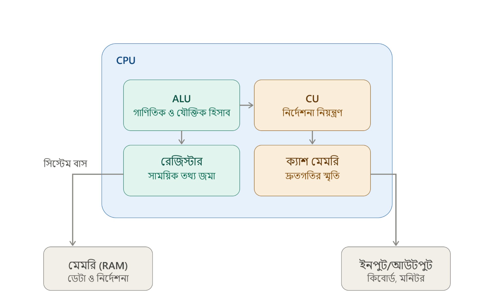

আমরা প্রতিদিন মোবাইল, কম্পিউটার, ইন্টারনেট ব্যবহার করে তথ্য আদান-প্রদান করি — এটাই মূলত ICT বা তথ্য ও যোগাযোগ প্রযুক্তি। বর্তমান যুগে ব্যবসা, শিক্ষা, ব্যাংকিং, চিকিৎসা — সব ক্ষেত্রেই ICT অপরিহার্য হয়ে উঠেছে। কম্পিউটার ও ইন্টারনেটের সাহায্যে তথ্য সংগ্রহ, প্রক্রিয়াকরণ, সংরক্ষণ ও বিনিময়ের এই সামগ্রিক ব্যবস্থাই মানুষের জীবনযাত্রাকে সহজ ও গতিশীল করে তুলেছে।
কম্পিউটার, ইন্টারনেট, মোবাইল ফোন ইত্যাদি প্রযুক্তি ব্যবহার করে তথ্য সংগ্রহ, প্রক্রিয়াকরণ, সংরক্ষণ এবং আদান-প্রদান করার সামগ্রিক ব্যবস্থাকে ICT (Information and Communication Technology) বা তথ্য ও যোগাযোগ প্রযুক্তি বলা হয়। এখানে "I" (Information) মানে তথ্য, "C" (Communication) মানে যোগাযোগ, আর "T" (Technology) মানে প্রযুক্তি — এই তিনটা মিলেই ICT।
উদাহরণ: মোবাইলে ফেসবুকে মেসেজ পাঠানো, বা ব্যাংকে কম্পিউটারের মাধ্যমে হিসাব দেখা — এগুলো ICT-এর ব্যবহারিক উদাহরণ।
IT (Information Technology) — তথ্য প্রযুক্তি যেসব প্রযুক্তি তথ্য সংগ্রহ, প্রক্রিয়াকরণ ও সংরক্ষণের কাজে ব্যবহৃত হয়, তাকে তথ্য প্রযুক্তি বা IT বলে। মূলত কম্পিউটার, সফটওয়্যার ও স্টোরেজ ডিভাইস নিয়ে IT গঠিত। উদাহরণ: কম্পিউটারে ডেটা এন্ট্রি করা, এক্সেল শিটে হিসাব করা, বা হার্ডডিস্কে ফাইল সংরক্ষণ করা — এগুলো IT-এর কাজ।
CT (Communication Technology) — যোগাযোগ প্রযুক্তি যেসব প্রযুক্তি এক স্থান থেকে অন্য স্থানে তথ্য পাঠানো বা যোগাযোগ স্থাপনের কাজে ব্যবহৃত হয়, তাকে যোগাযোগ প্রযুক্তি বা CT বলে। মূলত নেটওয়ার্ক, ইন্টারনেট ও টেলিযোগাযোগ ব্যবস্থা নিয়ে CT গঠিত। উদাহরণ: মোবাইল ফোনে কল করা, ইন্টারনেটে মেসেজ পাঠানো, বা ইমেইল আদান-প্রদান করা — এগুলো CT-এর কাজ।
IT দিয়ে তথ্য প্রক্রিয়া করা হয়, আর CT দিয়ে সেই তথ্য আদান-প্রদান করা হয়। এই দুইটা একসাথে মিলেই তৈরি হয় ICT।
ICT সাধারণত ৬টি মৌলিক উপাদান নিয়ে গঠিত। নিচে প্রতিটা উদাহরণসহ আলোচনা করা হলো:
সংক্ষেপে বলা যায়, ICT হলো তথ্য সংগ্রহ, প্রক্রিয়াকরণ ও আদান-প্রদানের একটি সমন্বিত প্রযুক্তিগত ব্যবস্থা, যা IT ও CT-এর সমন্বয়ে গঠিত এবং হার্ডওয়্যার, সফটওয়্যার, ডেটা, নেটওয়ার্ক, মানবসম্পদ ও পদ্ধতি — এই ৬টি মৌলিক উপাদান নিয়ে কাজ করে। এই উপাদানগুলো একসাথে কাজ করেই আধুনিক জীবনকে সহজ ও গতিশীল করে তুলেছে।
| পয়েন্ট | ইশারা |
|---|---|
| IT | তথ্য প্রক্রিয়াকরণ প্রযুক্তি |
| CT | যোগাযোগ প্রযুক্তি |
| হার্ডওয়্যার | ছোঁয়া যায় এমন যন্ত্রাংশ |
| সফটওয়্যার | প্রোগ্রামের সমষ্টি |
| ডেটা | কাঁচা তথ্য |
| নেটওয়ার্ক ও টেলিযোগাযোগ | সংযোগ ও যোগাযোগ ব্যবস্থা |
| মানবসম্পদ | ব্যবহারকারী/প্রোগ্রামার |
| পদ্ধতি | ব্যবহারের নিয়ম-নির্দেশনা |
কম্পিউটার আজকের যে আধুনিক রূপে দেখা যায়, তা একদিনে তৈরি হয়নি। প্রযুক্তির উন্নয়নের সাথে সাথে কম্পিউটার ধাপে ধাপে বিভিন্ন পরিবর্তনের মধ্য দিয়ে গেছে, আর এই ধাপগুলোকেই কম্পিউটার প্রজন্ম বলা হয়। প্রতিটি প্রজন্মে ব্যবহৃত প্রযুক্তি, আকার ও গতির ভিত্তিতে কম্পিউটারকে ৫টি প্রজন্মে ভাগ করা হয়েছে। নিচে কম্পিউটারের প্রতিটি প্রজন্ম আলোচনা করা হলো।
উদাহরণ: ENIAC (Electronic Numerical Integrator and Computer) ও UNIVAC I।
উদাহরণ: IBM 1401 ও IBM 7090।
উদাহরণ: IBM 360 সিরিজ।
উদাহরণ: Intel 4004 মাইক্রোপ্রসেসর ও IBM PC।
উদাহরণ: ChatGPT-এর মতো AI সিস্টেম বা Siri, Alexa-এর মতো ভয়েস অ্যাসিস্ট্যান্ট।
সংক্ষেপে বলা যায়, কম্পিউটার প্রযুক্তির ক্রমবিকাশের ধারায় ভ্যাকুয়াম টিউব থেকে শুরু করে কৃত্রিম বুদ্ধিমত্তা পর্যন্ত মোট ৫টি প্রজন্মের মধ্য দিয়ে গেছে। প্রতিটি প্রজন্মে কম্পিউটারের আকার ছোট, গতি দ্রুত এবং ব্যবহার সহজ হয়েছে, যা আজকের আধুনিক কম্পিউটার তৈরিতে গুরুত্বপূর্ণ ভূমিকা রেখেছে।
| পয়েন্ট | ইশারা |
|---|---|
| সময়কাল | মূল প্রযুক্তি |
| ১৯৪০-১৯৫৬ | ভ্যাকুয়াম টিউব |
| ১৯৫৬-১৯৬৩ | ট্রানজিস্টর |
| ১৯৬৪-১৯৭১ | ইন্টিগ্রেটেড সার্কিট (IC) |
| ১৯৭১-১৯৮০ | মাইক্রোপ্রসেসর |
| ১৯৮০-বর্তমান | কৃত্রিম বুদ্ধিমত্তা (AI) |
বর্তমান বিশ্বে ICT একটি দ্রুত বর্ধনশীল খাত, যেখানে প্রতিনিয়ত নতুন নতুন কাজের সুযোগ তৈরি হচ্ছে। প্রোগ্রামিং থেকে শুরু করে নেটওয়ার্কিং, ডিজাইন থেকে ডেটা বিশ্লেষণ — বিভিন্ন ক্ষেত্রে দক্ষ জনশক্তির চাহিদা প্রতিনিয়ত বাড়ছে। দেশে ও বিদেশে উভয় জায়গাতেই ICT সেক্টরে চাকরি ও ফ্রিল্যান্সিং করার প্রচুর সুযোগ রয়েছে। নিচে ICT সেক্টরের বিভিন্ন ক্যারিয়ার সুযোগ আলোচনা করা হলো।
সংক্ষেপে বলা যায়, ICT সেক্টরে সফটওয়্যার ডেভেলপমেন্ট থেকে শুরু করে ডিজিটাল মার্কেটিং পর্যন্ত বিভিন্ন ক্ষেত্রে বিশাল ক্যারিয়ার সুযোগ রয়েছে। সঠিক দক্ষতা অর্জন করলে দেশে ও বিদেশে উভয় জায়গাতেই এই খাতে ভালো ক্যারিয়ার গড়া সম্ভব।
| পয়েন্ট | ইশারা |
|---|---|
| সফটওয়্যার ডেভেলপমেন্ট | প্রোগ্রামিং করে সফটওয়্যার তৈরি |
| ওয়েব ডেভেলপমেন্ট | ওয়েবসাইট তৈরি ও রক্ষণাবেক্ষণ |
| নেটওয়ার্ক অ্যাডমিনিস্ট্রেশন | নেটওয়ার্ক স্থাপন ও নিরাপদ রাখা |
| সাইবার সিকিউরিটি | হ্যাকিং থেকে রক্ষা |
| ডেটাবেজ ম্যানেজমেন্ট | ডেটা সংগঠিতভাবে রাখা |
| ডেটা অ্যানালিসিস | ডেটা বিশ্লেষণ করে সিদ্ধান্তে সহায়তা |
| UI/UX ডিজাইন | দৃষ্টিনন্দন সফটওয়্যার ডিজাইন |
| আইটি সাপোর্ট | কারিগরি সমস্যা সমাধান |
| ফ্রিল্যান্সিং | স্বাধীনভাবে প্রজেক্ট ভিত্তিক কাজ |
| ক্লাউড কম্পিউটিং | দূরবর্তী সার্ভারে সেবা প্রদান |
| মোবাইল অ্যাপ ডেভেলপমেন্ট | অ্যান্ড্রয়েড/আইওএস অ্যাপ তৈরি |
| ডিজিটাল মার্কেটিং | ইন্টারনেটে পণ্যের প্রচারণা |
| শিক্ষকতা ও প্রশিক্ষণ | ICT বিষয়ে প্রশিক্ষণ দেওয়া |
| উদ্যোক্তা হওয়া | নিজস্ব আইটি প্রতিষ্ঠান গড়া |
কম্পিউটারের সব কাজ সম্পন্ন হয় এর ভেতরে থাকা বিভিন্ন যন্ত্রাংশের সমন্বিত কার্যক্রমের মাধ্যমে, আর এই যন্ত্রাংশগুলো একটি নির্দিষ্ট বাক্সের মধ্যে সংরক্ষিত থাকে, যাকে সিস্টেম ইউনিট বলা হয়। কম্পিউটারের কার্যক্ষমতা ও গঠন বোঝার জন্য সিস্টেম ইউনিট ও এর উপাদানসমূহ সম্পর্কে জ্ঞান থাকা অত্যন্ত গুরুত্বপূর্ণ।
সিস্টেম ইউনিট হলো কম্পিউটারের সেই ধাতব বা প্লাস্টিকের বাক্স বা কেসিং, যার ভেতরে কম্পিউটারের মূল কার্যকরী যন্ত্রাংশগুলো, যেমন প্রসেসর, মাদারবোর্ড ও মেমোরি সংরক্ষিত ও সংযুক্ত থাকে। যেমন, ডেস্কটপ কম্পিউটারের মনিটরের পাশে থাকা আয়তাকার বাক্সটিই সিস্টেম ইউনিট, যার ভেতরে কম্পিউটারের প্রধান যন্ত্রাংশগুলো বসানো থাকে।
সিস্টেম ইউনিট কম্পিউটারের মূল কাঠামো, যার ভেতরে থাকা বিভিন্ন উপাদান একসাথে সমন্বিতভাবে কাজ করে কম্পিউটারকে সচল রাখে। মাদারবোর্ড, প্রসেসর, র্যাম, রম, পাওয়ার সাপ্লাইসহ প্রতিটি অংশ নির্দিষ্ট কাজের জন্য দায়ী। এসব উপাদানের সমন্বয়েই একটি কম্পিউটার সঠিকভাবে কাজ করতে পারে।
| পয়েন্ট | ইশারা |
|---|---|
| মাদারবোর্ড | সব যন্ত্রাংশের সংযোগস্থল |
| প্রসেসর | কম্পিউটারের মস্তিষ্ক |
| র্যাম | অস্থায়ী স্মৃতি |
| রম | স্থায়ী, প্রাথমিক নির্দেশনা |
| পাওয়ার সাপ্লাই | বিদ্যুৎ সরবরাহ |
| হার্ডডিস্ক | স্থায়ী ডেটা সংরক্ষণ |
| অপটিক্যাল ড্রাইভ | সিডি/ডিভিডি পড়া |
| এক্সপানশন স্লট | অতিরিক্ত কার্ড সংযোগ |
| কুলিং ফ্যান | তাপ নিয়ন্ত্রণ |
| ক্যাশ মেমরি | দ্রুতগতির সাময়িক স্মৃতি |
| বাস | ডেটা চলাচলের পথ |
| পোর্ট/কানেক্টর | বাহ্যিক যন্ত্রাংশ সংযোগ |
| সাউন্ড কার্ড | শব্দ প্রক্রিয়াকরণ |
| গ্রাফিক্স কার্ড | ছবি/ভিডিও প্রক্রিয়াকরণ |
তথ্য ও ডাটা — এই দুটি শব্দ আমরা প্রায়ই একসাথে ব্যবহার করি, কিন্তু এদের মধ্যে গুরুত্বপূর্ণ পার্থক্য আছে। কাঁচা অবস্থার সংখ্যা বা লেখাকে ডাটা বলে, আর সেই ডাটা প্রক্রিয়াকরণের মাধ্যমে অর্থবহ রূপ পেলে তাকে তথ্য বলা হয়। ICT-এর ক্ষেত্রে এই দুটি ধারণা ভালোভাবে বোঝা জরুরি, কারণ পুরো তথ্য ব্যবস্থাপনা এই দুইয়ের ওপর ভিত্তি করেই গড়ে ওঠে। নিচে টেবিলের মাধ্যমে এদের মধ্যে পার্থক্য দেখানো হলো।
| ডাটা (Data) | তথ্য (Information) |
|---|---|
| কাঁচা, অপ্রক্রিয়াজাত সংখ্যা, লেখা বা তথ্যকণা | প্রক্রিয়াজাত ও অর্থবহ ডাটা |
| নিজে থেকে কোনো অর্থ বহন করে না | নির্দিষ্ট অর্থ ও উদ্দেশ্য বহন করে |
| প্রক্রিয়াকরণের আগের অবস্থা | প্রক্রিয়াকরণের পরের অবস্থা |
| সরাসরি সিদ্ধান্ত নেওয়ার কাজে ব্যবহার করা কঠিন | সরাসরি সিদ্ধান্ত নেওয়ার কাজে ব্যবহারযোগ্য |
| একটা ক্লাসের সব ছাত্রের রোল নম্বর ও নম্বর | "ক্লাসে গড় নম্বর ৭৫" — এই সারমর্ম |
| বিক্ষিপ্ত ও অসংগঠিত হতে পারে | সংগঠিত ও কাঠামোবদ্ধ থাকে |
| তথ্যের উৎস, তথ্য তৈরি হয় এটা থেকেই | ডাটার ওপর নির্ভরশীল, ডাটা ছাড়া তথ্য তৈরি হয় না |
সংক্ষেপে বলা যায়, ডাটা হলো কাঁচামাল আর তথ্য হলো সেই কাঁচামাল প্রক্রিয়াকরণের ফসল। ডাটা নিজে থেকে কোনো অর্থ বহন করে না, কিন্তু প্রক্রিয়াকরণের পর তা তথ্যে রূপান্তরিত হয়ে সিদ্ধান্ত নেওয়ার কাজে ব্যবহৃত হয়।
| পয়েন্ট | ইশারা |
|---|---|
| ডাটা | কাঁচা, অর্থহীন সংখ্যা/লেখা |
| তথ্য | প্রক্রিয়াজাত, অর্থবহ |
| সম্পর্ক | ডাটা → প্রক্রিয়াকরণ → তথ্য |
| ব্যবহার | তথ্য সরাসরি সিদ্ধান্তে কাজে লাগে |
কম্পিউটার আজকাল বিভিন্ন আকার, ক্ষমতা ও কাজের ধরন অনুযায়ী তৈরি হয়, তাই একে বিভিন্নভাবে ভাগ করা যায়। কাজের ধরন, ডেটা প্রক্রিয়াকরণ পদ্ধতি এবং আকার-আকৃতি — এই কয়েকটি ভিত্তিতে কম্পিউটারকে শ্রেণিবদ্ধ করা হয়। প্রতিটি ধরনের কম্পিউটার নির্দিষ্ট প্রয়োজন অনুযায়ী ব্যবহৃত হয়, যেমন ছোট হিসাব-নিকাশ থেকে শুরু করে জটিল বৈজ্ঞানিক গবেষণা পর্যন্ত। নিচে কম্পিউটারের বিভিন্ন প্রকারভেদ আলোচনা করা হলো।
সংক্ষেপে বলা যায়, কম্পিউটারকে কার্যপ্রণালী, আকার-ক্ষমতা ও ব্যবহারিক ধরন — এই তিনটি ভিত্তিতে বিভিন্ন শ্রেণিতে ভাগ করা যায়। প্রতিটি প্রকারের কম্পিউটার নির্দিষ্ট প্রয়োজন মেটানোর জন্য ডিজাইন করা হয়েছে, যা ছোট ব্যক্তিগত কাজ থেকে শুরু করে বড় বৈজ্ঞানিক গবেষণা পর্যন্ত বিভিন্ন ক্ষেত্রে ব্যবহৃত হয়।
| পয়েন্ট | ইশারা |
|---|---|
| অ্যানালগ কম্পিউটার | ভৌত রাশি পরিমাপ করে |
| ডিজিটাল কম্পিউটার | বাইনারি সংখ্যায় কাজ করে |
| হাইব্রিড কম্পিউটার | অ্যানালগ + ডিজিটাল মিশ্রণ |
| সুপার কম্পিউটার | সবচেয়ে শক্তিশালী ও দ্রুতগতির |
| মেইনফ্রেম কম্পিউটার | বড় প্রতিষ্ঠানের বিশাল ডেটা প্রক্রিয়া |
| মিনি কম্পিউটার | মাঝারি প্রতিষ্ঠানের জন্য উপযোগী |
| মাইক্রো কম্পিউটার | ব্যক্তিগত ব্যবহারের ছোট কম্পিউটার |
| ডেস্কটপ কম্পিউটার | টেবিলে স্থাপনযোগ্য |
| ল্যাপটপ কম্পিউটার | বহনযোগ্য, ব্যাটারিচালিত |
| ট্যাবলেট কম্পিউটার | স্পর্শনির্ভর, হালকা |
| সার্ভার কম্পিউটার | নেটওয়ার্কে সেবা প্রদানকারী |
| ওয়ার্কস্টেশন কম্পিউটার | জটিল গ্রাফিক্স/প্রকৌশল কাজের জন্য |
তথ্য ও যোগাযোগ প্রযুক্তি (ICT) বর্তমান শিক্ষাব্যবস্থাকে সম্পূর্ণভাবে বদলে দিয়েছে। আগে যেখানে শিক্ষা শুধু বই ও ব্ল্যাকবোর্ডের মধ্যে সীমাবদ্ধ ছিল, এখন কম্পিউটার, ইন্টারনেট ও বিভিন্ন ডিজিটাল ডিভাইসের মাধ্যমে শিক্ষাদান ও গ্রহণ অনেক সহজ ও কার্যকর হয়েছে। শিক্ষার মানোন্নয়নে ICT-এর ভূমিকা তাই অত্যন্ত গুরুত্বপূর্ণ। নিচে শিক্ষা ক্ষেত্রে ICT-এর ব্যবহারগুলো আলোচনা করা হলো।
শিক্ষা ক্ষেত্রে ICT-এর ব্যবহার শিক্ষাদান ও শিক্ষাগ্রহণ প্রক্রিয়াকে আরও সহজ, দ্রুত ও কার্যকর করে তুলেছে। অনলাইন ক্লাস থেকে শুরু করে ডিজিটাল লাইব্রেরি পর্যন্ত সব ক্ষেত্রেই ICT-এর অবদান রয়েছে। তাই বলা যায়, আধুনিক শিক্ষাব্যবস্থার অগ্রগতিতে ICT একটি অপরিহার্য উপাদান।
| পয়েন্ট | ইশারা |
|---|---|
| অনলাইন ক্লাস | দূরত্ব সত্ত্বেও ক্লাস |
| মাল্টিমিডিয়া কনটেন্ট | ছবি/ভিডিওতে সহজবোধ্য |
| ই-লার্নিং প্ল্যাটফর্ম | ঘরে বসে কোর্স |
| ডিজিটাল লাইব্রেরি | অনলাইন বই/গবেষণা |
| ভার্চুয়াল ক্লাসরুম | স্মার্ট বোর্ড ব্যবহার |
| অনলাইন পরীক্ষা | দ্রুত ফলাফল |
| যোগাযোগ ব্যবস্থা | ইমেইল/মেসেজিং |
| গবেষণা সহায়তা | তথ্য সংগ্রহ সহজ |
| রেকর্ড ব্যবস্থাপনা | ডেটা সংরক্ষণ |
| দূরশিক্ষণ | দূরবর্তী শিক্ষার সুযোগ |
| প্রেজেন্টেশন তৈরি | আকর্ষণীয় উপস্থাপনা |
| স্বয়ংক্রিয় মূল্যায়ন | দ্রুত ও নির্ভুল ফলাফল |
আধুনিক চিকিৎসা ব্যবস্থায় তথ্য ও যোগাযোগ প্রযুক্তি (ICT) এক বিশাল পরিবর্তন এনেছে। রোগ নির্ণয় থেকে শুরু করে চিকিৎসা, ওষুধ প্রদান ও রোগীর তথ্য সংরক্ষণ—প্রতিটি ক্ষেত্রেই ICT এখন অপরিহার্য হয়ে উঠেছে। এর ফলে চিকিৎসাসেবা আগের চেয়ে অনেক দ্রুত, নির্ভুল ও সহজলভ্য হয়েছে। নিচে চিকিৎসা ক্ষেত্রে ICT-এর ব্যবহারগুলো আলোচনা করা হলো।
চিকিৎসা ক্ষেত্রে ICT-এর ব্যবহার রোগ নির্ণয়, চিকিৎসা ও স্বাস্থ্যসেবা প্রদানকে আরও দ্রুত, নির্ভুল ও সহজলভ্য করে তুলেছে। টেলিমেডিসিন থেকে রোবোটিক সার্জারি পর্যন্ত সব ক্ষেত্রেই এর অবদান লক্ষণীয়। তাই বলা যায়, আধুনিক চিকিৎসাব্যবস্থার উন্নয়নে ICT একটি অত্যন্ত গুরুত্বপূর্ণ উপাদান।
| পয়েন্ট | ইশারা |
|---|---|
| টেলিমেডিসিন | দূর থেকে চিকিৎসা পরামর্শ |
| ইলেকট্রনিক স্বাস্থ্য রেকর্ড | ডিজিটাল রোগীর তথ্য |
| রোগ নির্ণয় যন্ত্র | সিটি স্ক্যান/এমআরআই |
| অনলাইন অ্যাপয়েন্টমেন্ট | ঘরে বসে সিরিয়াল বুকিং |
| রোবোটিক সার্জারি | নিখুঁত অস্ত্রোপচার |
| ওষুধ গবেষণা | সিমুলেশনে দ্রুত গবেষণা |
| স্বাস্থ্য সচেতনতা প্রচার | অনলাইনে সচেতনতা |
| রক্ত/ওষুধ ব্যবস্থাপনা | দ্রুত তথ্য পাওয়া |
| মনিটরিং সিস্টেম | আইসিইউ পর্যবেক্ষণ |
| চিকিৎসক প্রশিক্ষণ | ভার্চুয়াল রিয়েলিটি অনুশীলন |
কম্পিউটারের প্রতিটি কাজ পরিচালনার জন্য এমন একটি অংশ প্রয়োজন যা নির্দেশনা গ্রহণ করে, তা বিশ্লেষণ করে এবং প্রয়োজনীয় হিসাব সম্পন্ন করে। এই কাজটি করে থাকে CPU, যাকে কম্পিউটারের মস্তিষ্ক বলা হয়। CPU-এর গঠন ও কার্যপ্রণালী বোঝা কম্পিউটার কীভাবে কাজ করে তা বুঝতে সাহায্য করে।
CPU হলো কম্পিউটারের এমন একটি প্রধান অংশ, যা বিভিন্ন নির্দেশনা গ্রহণ করে, সেগুলো বিশ্লেষণ করে এবং প্রয়োজনীয় গাণিতিক, যৌক্তিক ও নিয়ন্ত্রণমূলক কাজ সম্পন্ন করে। এটি কম্পিউটারের সব কাজের কেন্দ্রবিন্দু হিসেবে কাজ করে।

CPU-এর ভেতরে ALU, CU, রেজিস্টার ও ক্যাশ মেমরি একসাথে কাজ করে নির্দেশনা গ্রহণ, বিশ্লেষণ ও কার্যকর করে থাকে। সিস্টেম বাসের মাধ্যমে এটি মেমরি ও ইনপুট-আউটপুট ডিভাইসের সাথে যুক্ত থাকে। এই সমন্বিত কাঠামোর কারণেই CPU কম্পিউটারের সবচেয়ে গুরুত্বপূর্ণ অংশ হিসেবে বিবেচিত হয়।
| পয়েন্ট | ইশারা |
|---|---|
| ALU | গাণিতিক/যৌক্তিক হিসাব |
| CU | নির্দেশনা নিয়ন্ত্রণ |
| রেজিস্টার | সাময়িক দ্রুত স্মৃতি |
| ক্যাশ মেমরি | দ্রুতগতির স্মৃতি |
| সিস্টেম বাস | ডেটা আদান-প্রদানের পথ |
| মেমরি সংযোগ | RAM থেকে ডেটা আনা-নেওয়া |
| I/O সংযোগ | কিবোর্ড/মনিটরের সাথে যোগাযোগ |
কম্পিউটার সঠিকভাবে চলার জন্য প্রধানত তিনটি অংশ একসাথে কাজ করে — হার্ডওয়্যার, সফটওয়্যার ও ফার্মওয়্যার। এদের মধ্যে হার্ডওয়্যার হলো দৃশ্যমান যন্ত্রাংশ, সফটওয়্যার হলো নির্দেশনার সমষ্টি, আর ফার্মওয়্যার হলো এই দুইয়ের মাঝামাঝি এক বিশেষ ধরনের প্রোগ্রাম। এদের সংজ্ঞা ও পার্থক্য জানা কম্পিউটার সম্পর্কে স্পষ্ট ধারণা পেতে সাহায্য করে।
হার্ডওয়্যার হলো কম্পিউটারের সেই সব যন্ত্রাংশ, যা চোখে দেখা যায় ও হাত দিয়ে স্পর্শ করা যায়। যেমন, কীবোর্ড, মাউস, মনিটর ও প্রসেসর হলো হার্ডওয়্যারের উদাহরণ, যা কম্পিউটারের সাথে সরাসরি সংযুক্ত থেকে কাজ করে।
সফটওয়্যার হলো নির্দেশনা বা প্রোগ্রামের একটি সমষ্টি, যা হার্ডওয়্যারকে নির্দিষ্ট কাজ সম্পাদনের নির্দেশ দেয় এবং যা স্পর্শ করা যায় না। যেমন, Windows অপারেটিং সিস্টেম বা MS Word প্রোগ্রাম সফটওয়্যারের উদাহরণ, যা কম্পিউটারকে ব্যবহারযোগ্য করে তোলে।
ফার্মওয়্যার হলো এক বিশেষ ধরনের সফটওয়্যার, যা হার্ডওয়্যারের মধ্যে স্থায়ীভাবে সংরক্ষিত থাকে এবং হার্ডওয়্যারকে চালু হতে ও প্রাথমিক কাজ পরিচালনা করতে সাহায্য করে। যেমন, কম্পিউটারের মাদারবোর্ডে থাকা BIOS একটি ফার্মওয়্যার, যা কম্পিউটার চালু হওয়ার সময় প্রথমে সক্রিয় হয়ে অন্যান্য যন্ত্রাংশ পরীক্ষা করে।
| হার্ডওয়্যার | সফটওয়্যার | ফার্মওয়্যার |
|---|---|---|
| কম্পিউটারের যে অংশ স্পর্শ করা যায় ও চোখে দেখা যায় | কম্পিউটারের যে অংশ নির্দেশনার সমষ্টি, স্পর্শ করা যায় না | হার্ডওয়্যারে স্থায়ীভাবে গাঁথা থাকে, সরাসরি স্পর্শ করা না গেলেও হার্ডওয়্যারের ভেতরেই থাকে |
| ভৌত/দৃশ্যমান বস্তু | অদৃশ্য, প্রোগ্রাম আকারে থাকে | অদৃশ্য প্রোগ্রাম, তবে নির্দিষ্ট চিপে (যেমন ROM) স্থায়ীভাবে বসানো থাকে |
| কিবোর্ড, মাউস, মনিটর, প্রসেসর | Windows, MS Word, Chrome | BIOS, রাউটার/প্রিন্টারের ফার্মওয়্যার |
| সময়ের সাথে ক্ষয়প্রাপ্ত হয় বা নষ্ট হয় | ক্ষয় হয় না, তবে পুরনো হয়ে যেতে পারে | ক্ষয় হয় না, তবে মাঝে মাঝে আপডেট প্রয়োজন হয় |
| ইঞ্জিনিয়ারদের মাধ্যমে কারখানায় তৈরি হয় | প্রোগ্রামারের মাধ্যমে কোড লিখে তৈরি হয় | প্রস্তুতকারক কর্তৃক হার্ডওয়্যার তৈরির সময় প্রোগ্রাম করে বসানো হয় |
| পরিবর্তন বা মেরামত করা জটিল ও ব্যয়বহুল | সহজে আপডেট বা পরিবর্তন করা যায় | পরিবর্তন করা যায় তবে বিশেষ পদ্ধতিতে (ফ্ল্যাশিং), সহজে নয় |
| সফটওয়্যার ছাড়া কার্যকর নির্দেশনা পালন করতে পারে না | হার্ডওয়্যার ছাড়া চলতে পারে না | হার্ডওয়্যার ও সফটওয়্যারের মাঝামাঝি অবস্থানে থেকে দুইয়ের সংযোগ ঘটায় |
| কোনো মাধ্যমে সংরক্ষণের প্রয়োজন হয় না, এটি নিজেই একটি বস্তু | সিডি, পেনড্রাইভ বা হার্ডডিস্কে সংরক্ষণ করতে হয় | হার্ডওয়্যারের নির্দিষ্ট মেমরি চিপে (ROM/ফ্ল্যাশ) স্থায়ীভাবে সংরক্ষিত থাকে |
হার্ডওয়্যার, সফটওয়্যার ও ফার্মওয়্যার একে অপরের পরিপূরক। হার্ডওয়্যার হলো কম্পিউটারের দৃশ্যমান কাঠামো, সফটওয়্যার হলো সেই কাঠামো পরিচালনার নির্দেশনা, আর ফার্মওয়্যার এই দুইয়ের মধ্যে সংযোগ স্থাপন করে। তিনটির সমন্বিত কাজেই একটি কম্পিউটার সম্পূর্ণরূপে কার্যকর হয়ে ওঠে।
| পয়েন্ট | ইশারা |
|---|---|
| হার্ডওয়্যার সংজ্ঞা | স্পর্শযোগ্য যন্ত্রাংশ |
| সফটওয়্যার সংজ্ঞা | নির্দেশনার সমষ্টি |
| ফার্মওয়্যার সংজ্ঞা | হার্ডওয়্যারে স্থায়ী প্রোগ্রাম (BIOS) |
| পার্থক্য-সংজ্ঞা | স্পর্শযোগ্য বনাম নির্দেশনা |
| পার্থক্য-প্রকৃতি | দৃশ্যমান বনাম অদৃশ্য |
| পার্থক্য-উদাহরণ | কিবোর্ড বনাম Windows |
| পার্থক্য-ক্ষয় | ক্ষয়প্রাপ্ত বনাম ক্ষয়হীন |
| পার্থক্য-তৈরি | কারখানা বনাম কোডিং |
| পার্থক্য-পরিবর্তন | জটিল বনাম সহজ আপডেট |
| পার্থক্য-নির্ভরতা | পরস্পর নির্ভরশীল |
| পার্থক্য-সংরক্ষণ | নিজেই বস্তু বনাম মাধ্যমে সংরক্ষণ |
কম্পিউটার ব্যবহার করে আমরা দৈনন্দিন জীবনে বিভিন্ন নির্দিষ্ট কাজ যেমন লেখালেখি, হিসাব-নিকাশ বা ছবি সম্পাদনা করে থাকি। এসব নির্দিষ্ট কাজ সম্পন্ন করার জন্য যে সফটওয়্যার ব্যবহৃত হয়, তাকে অ্যাপ্লিকেশন সফটওয়্যার বলে। এটি ব্যবহারকারীর সরাসরি প্রয়োজন মেটায়।
অ্যাপ্লিকেশন সফটওয়্যার হলো এমন একটি সফটওয়্যার, যা ব্যবহারকারীর নির্দিষ্ট কোনো কাজ বা প্রয়োজন পূরণের জন্য তৈরি করা হয়। এটি সরাসরি ব্যবহারকারীর সাথে যুক্ত থেকে নির্দিষ্ট সেবা প্রদান করে থাকে।
অ্যাপ্লিকেশন সফটওয়্যার ব্যবহারকারীর নির্দিষ্ট কাজ সহজে সম্পন্ন করতে সহায়তা করে। ওয়ার্ড প্রসেসিং থেকে শুরু করে গেম সফটওয়্যার পর্যন্ত জীবনের প্রায় প্রতিটি ক্ষেত্রেই এর ব্যবহার লক্ষ্য করা যায়। তাই বলা যায়, দৈনন্দিন কাজ সহজ ও দ্রুত করতে অ্যাপ্লিকেশন সফটওয়্যারের ভূমিকা অপরিসীম।
| পয়েন্ট | ইশারা |
|---|---|
| ওয়ার্ড প্রসেসিং | MS Word — ডকুমেন্ট লেখা |
| স্প্রেডশিট | MS Excel — হিসাব-নিকাশ |
| প্রেজেন্টেশন | PowerPoint — স্লাইড তৈরি |
| ডেটাবেজ ম্যানেজমেন্ট | MS Access — তথ্য সংরক্ষণ |
| ওয়েব ব্রাউজার | Chrome — ওয়েবসাইট দেখা |
| গ্রাফিক্স এডিটিং | Photoshop — ছবি সম্পাদনা |
| মাল্টিমিডিয়া প্লেয়ার | VLC — গান/ভিডিও চালানো |
| অ্যান্টিভাইরাস | Avast/Kaspersky — ভাইরাস দূরীকরণ |
| যোগাযোগ সফটওয়্যার | Gmail — ইমেইল/চ্যাট |
| হিসাবরক্ষণ সফটওয়্যার | Tally — আয়-ব্যয় হিসাব |
| শিক্ষামূলক সফটওয়্যার | Duolingo — ভাষা শেখা |
| CAD সফটওয়্যার | AutoCAD — নকশা তৈরি |
| গেম সফটওয়্যার | PUBG — বিনোদন |
| পিডিএফ রিডার | Acrobat Reader — পিডিএফ পড়া |
কম্পিউটারের মেমরি মূলত দুই ধরনের হয়ে থাকে, যার মধ্যে র্যাম ও রম অন্যতম। এই দুই ধরনের মেমরি কম্পিউটারের বিভিন্ন কাজে গুরুত্বপূর্ণ ভূমিকা পালন করে। র্যাম ও রম উভয়ই কম্পিউটারের মেমরি হলেও এদের কাজের ধরন, ব্যবহার ও বৈশিষ্ট্য একে অপরের থেকে আলাদা।
র্যাম হলো কম্পিউটারের এমন একটি অস্থায়ী মেমরি, যেখানে চলমান প্রোগ্রাম ও ডেটা সাময়িকভাবে সংরক্ষিত থাকে এবং কম্পিউটার বন্ধ হয়ে গেলে এর তথ্য মুছে যায়। যেমন, একসাথে একাধিক প্রোগ্রাম চালানোর সময় সেগুলোর তথ্য র্যামে জমা থাকে।
রম হলো কম্পিউটারের এমন একটি স্থায়ী মেমরি, যেখানে গুরুত্বপূর্ণ ও প্রাথমিক নির্দেশনা স্থায়ীভাবে সংরক্ষিত থাকে এবং বিদ্যুৎ চলে গেলেও এর তথ্য মুছে যায় না। যেমন, কম্পিউটার চালু হওয়ার প্রাথমিক নির্দেশনা (BIOS) রমে সংরক্ষিত থাকে।
| র্যাম (RAM) | রম (ROM) |
|---|---|
| Random Access Memory | Read Only Memory |
| অস্থায়ী মেমরি | স্থায়ী মেমরি |
| বিদ্যুৎ চলে গেলে তথ্য মুছে যায় | বিদ্যুৎ চলে গেলেও তথ্য মুছে যায় না |
| তথ্য পড়া ও লেখা দুটোই করা যায় | সাধারণত শুধু পড়া যায়, লেখা যায় না |
| তুলনামূলক দ্রুতগতির | তুলনামূলক ধীরগতির |
| চলমান প্রোগ্রাম ও ডেটা রাখতে ব্যবহৃত হয় | কম্পিউটার চালুর প্রাথমিক নির্দেশনা রাখতে ব্যবহৃত হয় |
| DRAM, SRAM | BIOS চিপ |
| সাধারণত রমের চেয়ে বড় আকারের হয় | সাধারণত ছোট আকারের হয় |
র্যাম ও রম দুটোই কম্পিউটার চালাতে অপরিহার্য হলেও এদের কাজ ভিন্ন। র্যাম চলমান কাজের সাময়িক তথ্য রাখে, আর রম কম্পিউটার চালুর প্রাথমিক নির্দেশনা স্থায়ীভাবে সংরক্ষণ করে। দুটির সঠিক সমন্বয়েই কম্পিউটার সুষ্ঠুভাবে কাজ করতে পারে।
| পয়েন্ট | ইশারা |
|---|---|
| র্যাম সংজ্ঞা | অস্থায়ী, চলমান ডেটা |
| রম সংজ্ঞা | স্থায়ী, প্রাথমিক নির্দেশনা |
| পূর্ণরূপ | Random বনাম Read Only |
| তথ্য মোছা | মুছে যায় বনাম মুছে যায় না |
| পড়া/লেখা | পড়া-লেখা বনাম শুধু পড়া |
| গতি | দ্রুত বনাম ধীর |
| ব্যবহার | চলমান ডেটা বনাম BIOS |
| উদাহরণ | DRAM/SRAM বনাম BIOS চিপ |
| আকার | বড় বনাম ছোট |
কম্পিউটারে তথ্য প্রবেশ করানোর জন্য বিভিন্ন যন্ত্র ব্যবহৃত হয়, যাদেরকে ইনপুট ডিভাইস বলা হয়। এসব ডিভাইসের মাধ্যমে ব্যবহারকারী কম্পিউটারকে নির্দেশনা বা তথ্য দিতে পারে। নিচে বহুল ব্যবহৃত কয়েকটি ইনপুট ডিভাইস বর্ণনা করা হলো।
কিবোর্ড, মাউস থেকে শুরু করে স্ক্যানার, মাইক্রোফোনের মতো বিভিন্ন ইনপুট ডিভাইস কম্পিউটারে তথ্য প্রবেশ করানোর কাজ সহজ করে তোলে। প্রতিটি ডিভাইস নির্দিষ্ট কাজের জন্য বিশেষভাবে উপযোগী। তাই বলা যায়, সঠিক ইনপুট ডিভাইস ছাড়া কম্পিউটারের সাথে যোগাযোগ করা সম্ভব নয়।
| পয়েন্ট | ইশারা |
|---|---|
| কিবোর্ড | টাইপিং |
| মাউস | কার্সর নিয়ন্ত্রণ |
| স্ক্যানার | কাগজ ডিজিটাইজ |
| মাইক্রোফোন | শব্দ ইনপুট |
| ওয়েবক্যাম | ভিডিও ইনপুট |
| জয়স্টিক | গেম নিয়ন্ত্রণ |
| টাচপ্যাড | ল্যাপটপ মাউস বিকল্প |
| বারকোড রিডার | পণ্য শনাক্তকরণ |
| টাচস্ক্রিন | সরাসরি স্পর্শ ইনপুট |
| ডিজিটাল ক্যামেরা | ছবি/ভিডিও ইনপুট |
| গ্রাফিক্স ট্যাবলেট | হাতে আঁকা ইনপুট |
| OMR | এমসিকিউ মূল্যায়ন |
কম্পিউটার হার্ডওয়্যার নিজে থেকে কোনো কাজ করতে পারে না, এর জন্য একটি বিশেষ ধরনের সফটওয়্যার প্রয়োজন হয় যা হার্ডওয়্যারকে নিয়ন্ত্রণ করে। এই কাজটি করে থাকে সিস্টেম সফটওয়্যার। এটি ছাড়া কম্পিউটার চালুই হতে পারে না।
সংজ্ঞা
সিস্টেম সফটওয়্যার হলো এমন একটি সফটওয়্যার, যা কম্পিউটারের হার্ডওয়্যার পরিচালনা করে এবং অন্যান্য সফটওয়্যার চালানোর উপযোগী পরিবেশ তৈরি করে। এটি কম্পিউটার চালু হওয়ার সাথে সাথেই কাজ শুরু করে ও হার্ডওয়্যার-সফটওয়্যারের মধ্যে সমন্বয় সাধন করে। যেমন, Windows বা Linux অপারেটিং সিস্টেম সিস্টেম সফটওয়্যারের একটি উদাহরণ।
কম্পিউটার হার্ডওয়্যারকে সচল রাখতে এবং ব্যবহারকারীর বিভিন্ন কাজ সম্পন্ন করতে সফটওয়্যার প্রয়োজন হয়। কাজের ধরন অনুযায়ী সফটওয়্যারকে বিভিন্ন ভাগে ভাগ করা হয়ে থাকে। নিচে সফটওয়্যারের প্রধান প্রকারভেদ আলোচনা করা হলো।
সফটওয়্যারকে মূলত সিস্টেম সফটওয়্যার, অ্যাপ্লিকেশন সফটওয়্যার ও ইউটিলিটি সফটওয়্যারসহ আরও কয়েকটি ভাগে ভাগ করা যায়। প্রতিটি প্রকারের সফটওয়্যার নির্দিষ্ট কাজের জন্য তৈরি করা হয়। এসব সফটওয়্যারের সমন্বিত ব্যবহারেই কম্পিউটার পুরোপুরি কার্যকর হয়ে ওঠে।
| পয়েন্ট | ইশারা |
|---|---|
| সিস্টেম সফটওয়্যার | হার্ডওয়্যার পরিচালনা |
| অ্যাপ্লিকেশন সফটওয়্যার | নির্দিষ্ট কাজ সম্পন্ন |
| ইউটিলিটি সফটওয়্যার | রক্ষণাবেক্ষণ কাজ |
| প্রোগ্রামিং সফটওয়্যার | কোড লেখার সহায়ক |
| ড্রাইভার সফটওয়্যার | ডিভাইস সংযোগ |
| ফ্রিওয়্যার | বিনামূল্যে ব্যবহার |
| শেয়ারওয়্যার | সীমিত সময় ট্রায়াল |
| ওপেন সোর্স | কোড উন্মুক্ত/পরিবর্তনযোগ্য |
কম্পিউটার হার্ডওয়্যার ও ব্যবহারকারীর মাঝখানে এমন একটি সফটওয়্যার প্রয়োজন হয়, যা হার্ডওয়্যারকে নিয়ন্ত্রণ করে এবং ব্যবহারকারীর জন্য কাজ করা সহজ করে তোলে। এই কাজটি করে থাকে অপারেটিং সিস্টেম। এটি ছাড়া কম্পিউটার হার্ডওয়্যার ব্যবহারযোগ্য নয়।
অপারেটিং সিস্টেম হলো এমন একটি সিস্টেম সফটওয়্যার, যা কম্পিউটারের হার্ডওয়্যার ও অন্যান্য সফটওয়্যারের মধ্যে সমন্বয় সাধন করে এবং ব্যবহারকারীকে কম্পিউটার পরিচালনার সুযোগ করে দেয়। এটি কম্পিউটার চালু হওয়ার সাথে সাথেই কাজ শুরু করে এবং পুরো সিস্টেমকে নিয়ন্ত্রণে রাখে।
উদাহরণ Windows, Linux বা Android এক একটি অপারেটিং সিস্টেমের উদাহরণ, যা ছাড়া কম্পিউটার বা মোবাইল ডিভাইস ব্যবহার করা সম্ভব নয়।
অপারেটিং সিস্টেম শুধু কম্পিউটার চালু করাই নয়, বরং এটি কম্পিউটারের প্রতিটি সম্পদ পরিচালনা ও নিয়ন্ত্রণ করে। এর ফলে বিভিন্ন প্রোগ্রাম সুশৃঙ্খলভাবে চলতে পারে এবং ব্যবহারকারী নির্বিঘ্নে কাজ করতে পারে। নিচে অপারেটিং সিস্টেমের প্রধান কার্যাবলি আলোচনা করা হলো।
অপারেটিং সিস্টেম কম্পিউটারের মেমরি, প্রসেসর, ফাইল ও ডিভাইস পরিচালনাসহ নিরাপত্তা ও ব্যবহারকারী ইন্টারফেস প্রদানের মতো গুরুত্বপূর্ণ কাজ করে থাকে। এসব কার্যাবলির মাধ্যমেই কম্পিউটার সুশৃঙ্খলভাবে চলতে পারে। তাই বলা যায়, অপারেটিং সিস্টেম ছাড়া কম্পিউটার ব্যবহার করা প্রায় অসম্ভব।
| পয়েন্ট | ইশারা |
|---|---|
| মেমরি ব্যবস্থাপনা | মেমরি বরাদ্দ/মুক্তকরণ |
| প্রসেসর ব্যবস্থাপনা | পালাক্রমে প্রসেসিং সময় |
| ফাইল ব্যবস্থাপনা | ফাইল তৈরি/সংরক্ষণ |
| ডিভাইস ব্যবস্থাপনা | I/O ডিভাইস নিয়ন্ত্রণ |
| নিরাপত্তা প্রদান | পাসওয়ার্ড/অ্যাক্সেস নিয়ন্ত্রণ |
| এরর হ্যান্ডলিং | ত্রুটি শনাক্তকরণ |
| ইউজার ইন্টারফেস | সহজ পরিচালনার মাধ্যম |
| রিসোর্স বণ্টন | সম্পদ সুষম বণ্টন |
| জব শিডিউলিং | কাজের ক্রম নির্ধারণ |
| নেটওয়ার্ক ব্যবস্থাপনা | ইন্টারনেট/ফাইল শেয়ারিং |
কম্পিউটারে তথ্য প্রবেশ করানো এবং প্রক্রিয়াকরণের পর ফলাফল প্রদর্শনের জন্য দুই ধরনের ডিভাইস প্রয়োজন হয় — ইনপুট ডিভাইস ও আউটপুট ডিভাইস। এই দুই ধরনের ডিভাইস কাজের দিক থেকে সম্পূর্ণ বিপরীত। নিচে ইনপুট ও আউটপুট ডিভাইসের মধ্যে পার্থক্য বিস্তারিতভাবে আলোচনা করা হলো।
ইনপুট ডিভাইস হলো এমন ডিভাইস, যার মাধ্যমে ব্যবহারকারী কম্পিউটারে তথ্য বা নির্দেশনা প্রবেশ করায়। এই ডিভাইসগুলো বাইরে থেকে কম্পিউটারের দিকে তথ্য পাঠায় এবং কাঁচা তথ্য বা কমান্ড আকারে ডেটা সরবরাহ করে। যেমন, কিবোর্ড দিয়ে টাইপ করে লেখা ইনপুট দেওয়া হয়, মাউস দিয়ে ক্লিক করে কমান্ড দেওয়া হয়, আর স্ক্যানার দিয়ে কাগজের তথ্য ডিজিটাল ফরম্যাটে রূপান্তর করা হয়।
আউটপুট ডিভাইস হলো এমন ডিভাইস, যার মাধ্যমে কম্পিউটার প্রক্রিয়াকরণের পর প্রাপ্ত ফলাফল ব্যবহারকারীকে দেখায়। এই ডিভাইসগুলো কম্পিউটার থেকে বাইরের দিকে তথ্য পাঠায় এবং ফলাফল প্রক্রিয়াজাত ও বোধগম্য আকারে উপস্থাপন করে। যেমন, মনিটরে লেখা বা ছবি দেখা যায়, প্রিন্টার দিয়ে কাগজে প্রিন্ট করা হয়, আর স্পিকারের মাধ্যমে শব্দ শোনা যায়।
| ইনপুট ডিভাইস | আউটপুট ডিভাইস |
|---|---|
| যে ডিভাইসের মাধ্যমে কম্পিউটারে তথ্য প্রবেশ করানো হয় | যে ডিভাইসের মাধ্যমে প্রক্রিয়াকৃত ফলাফল প্রদর্শন করা হয় |
| ব্যবহারকারী থেকে কম্পিউটারে তথ্য পাঠায় | কম্পিউটার থেকে ব্যবহারকারীর কাছে ফলাফল পাঠায় |
| বাইরে থেকে কম্পিউটারের দিকে | কম্পিউটার থেকে বাইরের দিকে |
| কিবোর্ড, মাউস, স্ক্যানার | মনিটর, প্রিন্টার, স্পিকার |
| তথ্য প্রবেশের সময় ব্যবহৃত হয় | ফলাফল দেখার সময় ব্যবহৃত হয় |
| কাঁচা তথ্য বা কমান্ড আকারে থাকে | প্রক্রিয়াজাত ও বোধগম্য আকারে থাকে |
ইনপুট ডিভাইস তথ্য গ্রহণ করে আর আউটপুট ডিভাইস সেই তথ্যের প্রক্রিয়াজাত ফলাফল প্রদর্শন করে। এই দুই ধরনের ডিভাইসের সমন্বিত ব্যবহারেই ব্যবহারকারী কম্পিউটারের সাথে সম্পূর্ণভাবে যোগাযোগ করতে পারে। তাই বলা যায়, কম্পিউটার ব্যবহারে ইনপুট ও আউটপুট ডিভাইস উভয়ই সমান গুরুত্বপূর্ণ।
| পয়েন্ট | ইশারা |
|---|---|
| সংজ্ঞা | তথ্য প্রবেশ বনাম ফলাফল প্রদর্শন |
| কাজ | তথ্য পাঠানো বনাম ফলাফল পাঠানো |
| তথ্যের প্রবাহ | ভেতরে বনাম বাইরে |
| উদাহরণ | কিবোর্ড বনাম মনিটর |
| ব্যবহারের সময় | প্রবেশের সময় বনাম দেখার সময় |
| ফলাফলের ধরন | কাঁচা তথ্য বনাম প্রক্রিয়াজাত |
ইন্টারনেট ব্রাউজ করার সময় আমরা প্রায়ই কোনো লেখা বা ছবিতে ক্লিক করলে অন্য একটি পেজে চলে যাই। এই সুবিধাটি সম্ভব হয় হাইপার লিংকের মাধ্যমে। ওয়েব পেজগুলোকে একে অপরের সাথে সংযুক্ত রাখতে এটি অত্যন্ত গুরুত্বপূর্ণ ভূমিকা পালন করে।
হাইপার লিংক হলো এমন একটি সংযোগ মাধ্যম, যার মাধ্যমে কোনো লেখা, ছবি বা বাটনে ক্লিক করলে ব্যবহারকারী একই পেজের অন্য অংশে, ভিন্ন কোনো পেজে বা ভিন্ন কোনো ওয়েবসাইটে চলে যেতে পারে। এটি ওয়েব পেজগুলোর মধ্যে দ্রুত যাতায়াতের সুযোগ তৈরি করে।
ব্যবহারের ধরন ও গন্তব্যস্থল অনুযায়ী হাইপার লিংককে বিভিন্ন ভাগে ভাগ করা যায়। নিচে হাইপার লিংকের প্রধান প্রকারভেদ আলোচনা করা হলো।
হাইপার লিংক আধুনিক ইন্টারনেট ব্যবহারের একটি মূল ভিত্তি। এর গুরুত্ব ইন্টারনেট ব্রাউজিং, তথ্য খোঁজা ও যোগাযোগের ক্ষেত্রে ব্যাপক। নিচে এর গুরুত্ব আলোচনা করা হলো।
হাইপার লিংক ইন্টারনেটের একটি অপরিহার্য অংশ, যা বিভিন্ন ওয়েব পেজ ও ওয়েবসাইটকে একসাথে সংযুক্ত রাখে। টেক্সট, ইমেজ থেকে শুরু করে ইন্টারনাল ও এক্সটার্নাল লিংক পর্যন্ত বিভিন্ন প্রকারভেদ এবং সময় সাশ্রয় থেকে শুরু করে SEO পর্যন্ত এর নানা গুরুত্ব ব্যবহারকারীর কাজকে সহজ করে তোলে। তাই বলা যায়, আধুনিক ওয়েব ব্রাউজিং হাইপার লিংক ছাড়া কল্পনা করা যায় না।
| পয়েন্ট | ইশারা |
|---|---|
| টেক্সট লিংক | লেখায় ক্লিক |
| ইমেজ লিংক | ছবিতে ক্লিক |
| ইন্টারনাল লিংক | একই সাইটের ভেতরে |
| এক্সটার্নাল লিংক | ভিন্ন ওয়েবসাইটে |
| অ্যাংকর লিংক | একই পেজের অংশে |
| ইমেইল লিংক | ইমেইল ক্লায়েন্ট খোলে |
| ডাউনলোড লিংক | ফাইল ডাউনলোড শুরু |
| নেভিগেশন লিংক | মেনু বারের লিংক |
| ব্রেডক্রাম্ব লিংক | পথ দেখানো |
| জাভাস্ক্রিপ্ট লিংক | স্ক্রিপ্ট চালু করে |
| সোশ্যাল মিডিয়া লিংক | সোশ্যাল পেজে যাওয়া |
| ব্যাক/ফরওয়ার্ড লিংক | আগের/পরের পেজ |
| দ্রুত নেভিগেশন | সময় বাঁচায় |
| তথ্যের সংযোগ | সংশ্লিষ্ট তথ্য সংযুক্ত |
| ব্যবহারকারীর সুবিধা | দ্রুত তথ্য পাওয়া |
| ওয়েবসাইট প্রচার | ভিজিটর বৃদ্ধি |
| তথ্যের সংগঠন | সুশৃঙ্খল উপস্থাপন |
| সময় সাশ্রয় | টাইপ করতে হয় না |
| SEO গুরুত্ব | সার্চে ভালো র্যাংক |
| ব্যবহার-বান্ধব | আরামদায়ক অভিজ্ঞতা |
| শিক্ষামূলক গুরুত্ব | দ্রুত রেফারেন্স পাওয়া |
লেখালেখি, ডকুমেন্ট তৈরি ও সম্পাদনার কাজ আগে হাতে করতে হতো, যা সময়সাপেক্ষ ও কষ্টসাধ্য ছিল। এখন কম্পিউটারের মাধ্যমে এই কাজ অনেক সহজ ও দ্রুত হয়ে গেছে। এই সুবিধা দেয় ওয়ার্ড প্রসেসর নামক একটি বিশেষ সফটওয়্যার।
ওয়ার্ড প্রসেসর হলো এমন একটি অ্যাপ্লিকেশন সফটওয়্যার, যার মাধ্যমে লেখা টাইপ করা, সম্পাদনা করা, ফরম্যাট করা ও প্রিন্ট করা যায়। এটি ব্যবহার করে চিঠি, রিপোর্ট, অ্যাসাইনমেন্ট ইত্যাদি সহজে তৈরি করা যায়। যেমন, MS Word দিয়ে পরীক্ষার অ্যাসাইনমেন্ট টাইপ করে সুন্দরভাবে সাজানো যায়।
বর্তমানে বাজারে বিভিন্ন কোম্পানির তৈরি অনেক ওয়ার্ড প্রসেসিং সফটওয়্যার পাওয়া যায়। প্রতিটির নিজস্ব বৈশিষ্ট্য ও ব্যবহার ক্ষেত্র রয়েছে। নিচে বহুল ব্যবহৃত কয়েকটি ওয়ার্ড প্রসেসিং সফটওয়্যার আলোচনা করা হলো।
ওয়ার্ড প্রসেসর লেখালেখি ও ডকুমেন্ট তৈরির কাজকে সহজ, দ্রুত ও নির্ভুল করে তুলেছে। মাইক্রোসফট ওয়ার্ড থেকে শুরু করে গুগল ডকস পর্যন্ত বিভিন্ন সফটওয়্যার বিভিন্ন প্রয়োজনে ব্যবহৃত হয়। তাই বলা যায়, আধুনিক লেখালেখির কাজে ওয়ার্ড প্রসেসরের ভূমিকা অপরিহার্য।
| পয়েন্ট | ইশারা |
|---|---|
| মাইক্রোসফট ওয়ার্ড | সবচেয়ে জনপ্রিয় |
| গুগল ডকস | অনলাইন, দলগত কাজ |
| ওপেন অফিস রাইটার | ফ্রি ও ওপেন সোর্স |
| লিব্রে অফিস রাইটার | ওপেন অফিসের উন্নত রূপ |
| ওয়ার্ডপ্যাড | উইন্ডোজের সাধারণ সফটওয়্যার |
| নোটপ্যাড | সাধারণ টেক্সট এডিটর |
| অ্যাপল প্যাজেস | ম্যাক/আইওএস এর জন্য |
| ওয়ার্ডপারফেক্ট | আইনি ডকুমেন্টে ব্যবহৃত |
| জোহো রাইটার | ক্লাউডভিত্তিক |
| স্ক্রিভেনার | লেখক/গবেষকদের জন্য |
বর্তমান যুগে অফিসের কাজকর্ম, লেখালেখি, হিসাব-নিকাশ থেকে শুরু করে উপস্থাপনা তৈরি — সবকিছুই কম্পিউটার সফটওয়্যারের মাধ্যমে করা হয়। এই কাজগুলো সহজ ও দ্রুত করার জন্য মাইক্রোসফট কোম্পানি একটি সফটওয়্যার প্যাকেজ তৈরি করেছে, যা মাইক্রোসফট অফিস নামে পরিচিত। এটি অফিস, শিক্ষাপ্রতিষ্ঠান, ব্যবসা-প্রতিষ্ঠান সব জায়গায় ব্যাপকভাবে ব্যবহৃত হয়।
মাইক্রোসফট অফিস হলো একগুচ্ছ প্রোগ্রাম বা সফটওয়্যারের সমষ্টি, যেগুলো একসাথে প্যাকেজ আকারে তৈরি করা হয়েছে অফিসের বিভিন্ন কাজ যেমন লেখালেখি, হিসাব-নিকাশ, উপস্থাপনা তৈরি, তথ্য সংরক্ষণ ইত্যাদি সহজে সম্পন্ন করার জন্য। যেমন: একজন শিক্ষার্থী তার অ্যাসাইনমেন্ট লেখার জন্য একটি ওয়ার্ড প্রসেসিং প্রোগ্রাম ব্যবহার করে, আবার হিসাবের কাজের জন্য স্প্রেডশিট প্রোগ্রাম ব্যবহার করে — এই দুটোই মাইক্রোসফট অফিসের অংশ।
মাইক্রোসফট অফিস একটি বহুমুখী সফটওয়্যার প্যাকেজ, যা লেখালেখি থেকে শুরু করে হিসাব-নিকাশ, উপস্থাপনা ও তথ্য ব্যবস্থাপনা পর্যন্ত প্রায় সব ধরনের অফিসিয়াল কাজ সহজ করে দেয়। তাই আধুনিক অফিস, শিক্ষা ও ব্যবসায়িক কাজে এর গুরুত্ব অপরিসীম।
| পয়েন্ট | ইশারা |
|---|---|
| লেখালেখির কাজ | চিঠি, রিপোর্ট, বানান চেক |
| হিসাব-নিকাশ | সূত্র, বাজেট, ক্যালকুলেশন |
| উপস্থাপনা তৈরি | স্লাইড, সেমিনার |
| ডেটাবেজ ব্যবস্থাপনা | বড় তথ্য সংরক্ষণ |
| ই-মেইল ব্যবস্থাপনা | চিঠি আদান-প্রদান, ক্যালেন্ডার |
| নোট রাখা | দ্রুত তথ্য লেখা |
| প্রকাশনার কাজ | ব্রোশিওর, পত্রিকা ডিজাইন |
| ফরম তৈরি | জরিপ, প্রশ্নপত্র |
| ক্লাউড স্টোরেজ | যেকোনো জায়গা থেকে অ্যাক্সেস |
| সহযোগিতামূলক কাজ | একসাথে একই ফাইলে কাজ |
| মেইল মার্জ | ব্যক্তিগতকৃত চিঠি |
| গ্রাফিক্স ও ডিজাইন | চার্ট, গ্রাফ |
| ম্যাক্রো | স্বয়ংক্রিয় পুনরাবৃত্তি কাজ |
| টেমপ্লেট | প্রস্তুত নকশা ব্যবহার |
| নিরাপত্তা ব্যবস্থা | পাসওয়ার্ড সুরক্ষা |
হাতে লিখে চিঠি বা রিপোর্ট তৈরি করলে ভুল সংশোধন করা কঠিন এবং সময়সাপেক্ষ। এই সমস্যা সমাধানের জন্য কম্পিউটারে টেক্সট লেখা, সম্পাদনা ও সাজানোর জন্য যে সফটওয়্যার ব্যবহার করা হয়, তাকে ওয়ার্ড প্রসেসিং সফটওয়্যার বলে। এর অনেকগুলো বৈশিষ্ট্যের কারণে আজ প্রায় সব লেখালেখির কাজ কম্পিউটারেই সম্পন্ন হয়।
ওয়ার্ড প্রসেসিং সফটওয়্যারের এই বৈশিষ্ট্যগুলোর কারণে লেখালেখির কাজ আগের চেয়ে অনেক দ্রুত, নির্ভুল ও আকর্ষণীয় হয়েছে। তাই শিক্ষা, অফিস ও ব্যক্তিগত কাজে এটি এখন অপরিহার্য একটি সফটওয়্যার।
| পয়েন্ট | ইশারা |
|---|---|
| টেক্সট এডিটিং | লেখা যোগ-বিয়োগ সহজ |
| বানান-ব্যাকরণ চেক | স্বয়ংক্রিয় ভুল ধরা |
| ফরম্যাটিং | ফন্ট, রং, বোল্ড |
| কপি-কাট-পেস্ট | সময় বাঁচায় |
| পেজ সেটআপ | মার্জিন, দিক নির্ধারণ |
| প্রিন্ট সুবিধা | সরাসরি ছাপানো |
| মেইল মার্জ | ব্যক্তিগতকৃত চিঠি |
| টেবিল তৈরি | সারি-কলাম বিন্যাস |
| ছবি-গ্রাফিক্স | চার্ট, শেপ যোগ |
| হেডার-ফুটার | পৃষ্ঠা নম্বর, শিরোনাম |
| সূচিপত্র | স্বয়ংক্রিয় ইনডেক্স |
| সংরক্ষণ-পুনরুদ্ধার | ফাইল সেভ ও ওপেন |
| আন্ডু-রিডু | ভুল ফিরিয়ে আনা |
| ফাইন্ড-রিপ্লেস | শব্দ খুঁজে বদলানো |
| টেমপ্লেট | প্রস্তুত নকশা |
সংখ্যা নিয়ে হিসাব-নিকাশের কাজ হাতে করলে সময় বেশি লাগে এবং ভুল হওয়ার সম্ভাবনা থাকে। এই সমস্যা সমাধানের জন্য কম্পিউটারে সংখ্যাভিত্তিক তথ্য সাজিয়ে হিসাব করার একটি সফটওয়্যার ব্যবহার করা হয়, যাকে স্প্রেডশীট প্যাকেজ বলে। এটি বর্তমানে হিসাব-নিকাশের কাজে সবচেয়ে বেশি ব্যবহৃত সফটওয়্যারগুলোর একটি।
স্প্রেডশীট প্যাকেজ হলো এমন একটি প্রোগ্রাম, যার মাধ্যমে সারি ও কলাম দিয়ে গঠিত সেলের মধ্যে সংখ্যা বা তথ্য প্রবেশ করিয়ে স্বয়ংক্রিয়ভাবে যোগ, বিয়োগ, গুণ, ভাগসহ জটিল হিসাব করা যায়। যেমন: একটি প্রতিষ্ঠানের কর্মীদের বেতনের হিসাব এই ধরনের প্যাকেজ দিয়ে করা হয়, যেখানে সংখ্যা পরিবর্তন করলে ফলাফলও স্বয়ংক্রিয়ভাবে বদলে যায়।
স্প্রেডশীট প্যাকেজ হিসেবে এক্সেল হিসাব-নিকাশ, তথ্য বিশ্লেষণ, চার্ট তৈরি থেকে শুরু করে বাজেট ও প্রতিবেদন তৈরি পর্যন্ত অসংখ্য কাজে ব্যবহৃত হয়। তাই অফিস, ব্যবসা ও শিক্ষাক্ষেত্রে এক্সেলের গুরুত্ব অত্যন্ত ব্যাপক।
| পয়েন্ট | ইশারা |
|---|---|
| হিসাব-নিকাশ | যোগ-বিয়োগ-গুণ-ভাগ |
| বাজেট তৈরি | আয়-ব্যয় পরিকল্পনা |
| তথ্য বিশ্লেষণ | প্রবণতা বের করা |
| চার্ট-গ্রাফ | বার/পাই/লাইন |
| তালিকা-ডেটাবেজ | সর্ট-ফিল্টার |
| ফলাফল প্রস্তুত | গড়-গ্রেড হিসাব |
| সূত্র-ফাংশন | SUM, AVERAGE, IF |
| বেতন শীট | হাজিরা-কর্তন হিসাব |
| ইনভেন্টরি | পণ্যের মজুদ হিসাব |
| আর্থিক প্রতিবেদন | লাভ-ক্ষতি, ব্যালেন্স শীট |
| ডেটা শেয়ারিং | একসাথে কাজ |
| সময়সূচি | রুটিন, রোস্টার |
| সর্ট-ফিল্টার | ক্রমানুসারে সাজানো |
এক্সেলের ওয়ার্কশিটে বিভিন্ন ধরনের তথ্য প্রবেশ করানো হয় — কখনো লেখা, কখনো সংখ্যা, আবার কখনো তারিখ। এক্সেল এই তথ্যগুলোকে আলাদা আলাদাভাবে চিনে নেয় এবং সে অনুযায়ী সাজায় ও হিসাব করে। তাই এক্সেলে ডেটা প্রবেশ করানোর আগে এর প্রকারভেদ জানা প্রয়োজন।
এক্সেলে বিভিন্ন প্রকারের ডেটা রয়েছে বলেই এটি লেখালেখি, হিসাব-নিকাশ, তারিখ-সময় ব্যবস্থাপনা ও যুক্তিভিত্তিক বিশ্লেষণ—সবকিছুতেই ব্যবহার করা যায়। তাই এক্সেলে কাজ করার আগে প্রতিটি ডেটা টাইপের পার্থক্য বোঝা জরুরি।
| পয়েন্ট | ইশারা |
|---|---|
| টেক্সট ডেটা | শব্দ, গণনা নেই |
| সংখ্যা ডেটা | অঙ্ক, গাণিতিক হিসাব |
| তারিখ ডেটা | দিন-মাস-বছর |
| সময় ডেটা | ঘণ্টা-মিনিট-সেকেন্ড |
| মুদ্রা ডেটা | ৳/$ চিহ্নসহ |
| শতকরা ডেটা | % আকারে |
| লজিক্যাল ডেটা | TRUE/FALSE |
| সূত্র ডেটা | = চিহ্ন দিয়ে হিসাব |
| ত্রুটি মান | #DIV/0! জাতীয় বার্তা |
এক্সেলে হিসাব-নিকাশ করার জন্য দুটি গুরুত্বপূর্ণ পদ্ধতি ব্যবহার করা হয় — ফর্মুলা ও ফাংশন। দুটোই সংখ্যা নিয়ে হিসাব করতে ব্যবহৃত হলেও এদের গঠন ও ব্যবহারের পদ্ধতিতে পার্থক্য রয়েছে। নিচে দুটি বিষয় আলাদাভাবে আলোচনা করা হলো।
ফর্মুলা হলো ব্যবহারকারীর নিজের তৈরি করা একটি গাণিতিক এক্সপ্রেশন, যা সেলের মান ব্যবহার করে হিসাব করে এবং সবসময় সমান (=) চিহ্ন দিয়ে শুরু হয়। ব্যবহারকারী নিজে বিভিন্ন গাণিতিক চিহ্ন (+, -, *, /) ব্যবহার করে এটি তৈরি করেন। যেমন: =A1+A2+A3 লিখলে A1, A2 ও A3 সেলের যোগফল বের হয়।
ফাংশন হলো এক্সেলে আগে থেকে তৈরি করা একটি নির্দিষ্ট নামের সূত্র, যা জটিল হিসাব সহজে করার জন্য ব্যবহারকারীকে দেওয়া হয়। এতে ব্যবহারকারীকে নিজে থেকে গাণিতিক চিহ্ন বসাতে হয় না, শুধু নির্দিষ্ট নিয়মে ডেটার পরিসীমা উল্লেখ করতে হয়। যেমন: =SUM(A1:A10) লিখলে A1 থেকে A10 পর্যন্ত সব সংখ্যার যোগফল স্বয়ংক্রিয়ভাবে বের হয়।
| ফর্মুলা | ফাংশন |
|---|---|
| ব্যবহারকারীর নিজের তৈরি হিসাব | আগে থেকে তৈরি নির্দিষ্ট সূত্র |
| ব্যবহারকারী নিজে | এক্সেল প্রোগ্রাম আগে থেকে সরবরাহ করে |
| গাণিতিক চিহ্ন (+, -, *, /) ব্যবহার করে লেখা হয় | নির্দিষ্ট নাম ও বন্ধনীর মধ্যে সেল পরিসীমা লিখতে হয় |
| বড় হিসাবে দীর্ঘ ও জটিল হয়ে যায় | বড় হিসাবও ছোট আকারে সহজে করা যায় |
| =A1+A2+A3 | =SUM(A1:A3) |
| সম্পূর্ণ ব্যবহারকারীর ইচ্ছামতো তৈরি | নির্দিষ্ট নিয়ম মেনে ব্যবহার করতে হয় |
ফর্মুলা ও ফাংশন দুটোই এক্সেলের হিসাব-নিকাশের গুরুত্বপূর্ণ অংশ। ফর্মুলা ব্যবহারকারীর নিজের তৈরি সাধারণ হিসাব, আর ফাংশন হলো আগে থেকে প্রস্তুত জটিল হিসাবের সহজ সমাধান। দুটি একসাথে জানা থাকলে এক্সেলে যেকোনো হিসাব দ্রুত ও নির্ভুলভাবে করা সম্ভব হয়।
| পয়েন্ট | ইশারা |
|---|---|
| ফর্মুলা সংজ্ঞা | নিজের তৈরি হিসাব |
| ফাংশন সংজ্ঞা | আগে থেকে তৈরি সূত্র |
| ফর্মুলা গঠন | গাণিতিক চিহ্ন ব্যবহার |
| ফাংশন গঠন | নাম + বন্ধনী + পরিসীমা |
| উদাহরণ পার্থক্য | =A1+A2 বনাম =SUM(A1:A2) |
এক্সেলে তৈরি করা ওয়ার্কশীট অনেক সময় স্ক্রিনে যেমন দেখায়, প্রিন্ট করার পর কাগজে ঠিক তেমন নাও আসতে পারে। তাই প্রিন্ট করার আগে "প্রিন্ট প্রিভিউ" অপশনের মাধ্যমে দেখে নেওয়া হয় ফলাফলটি আসলে কেমন দেখাবে। এই উক্তিটির স্বপক্ষে নিচে যুক্তিগুলো তুলে ধরা হলো।
উপরের যুক্তিগুলো থেকে স্পষ্ট বোঝা যায় যে, প্রিন্ট প্রিভিউ ব্যবহার করলে কাগজ, কালি ও সময়ের অপচয় রোধ হয় এবং একটি সঠিক, পরিপাটি প্রিন্ট নিশ্চিত করা যায়। তাই "ওয়ার্কশীট প্রিন্ট করার আগে প্রিন্ট প্রিভিউ অপরিহার্য" উক্তিটি সম্পূর্ণ যুক্তিসঙ্গত।
| পয়েন্ট | ইশারা |
|---|---|
| কাগজ অপচয় রোধ | ভুল প্রিন্ট এড়ানো |
| কালি সাশ্রয় | টোনার খরচ কম |
| পৃষ্ঠা বিন্যাস | তথ্য কাটা পড়া রোধ |
| মার্জিন-দিক | উলম্ব/অনুভূমিক যাচাই |
| হেডার-ফুটার | সঠিক অবস্থান যাচাই |
| সময় সাশ্রয় | পুনঃপ্রিন্ট এড়ানো |
| গ্রিডলাইন-ফরম্যাট | রং-ফন্ট যাচাই |
| প্রিন্ট এরিয়া | প্রয়োজনীয় অংশ নির্বাচন |
| পেশাদারিত্ব | সুসজ্জিত নথি |
| ভুল সংশোধন | আগেভাগে ঠিক করা |
যেকোনো প্রতিষ্ঠান বা ব্যক্তির কাছে প্রতিদিন প্রচুর তথ্য জমা হয়, যেমন নাম, ঠিকানা, হিসাব-নিকাশ ইত্যাদি। এই তথ্যগুলো যদি এলোমেলোভাবে থাকে, তাহলে প্রয়োজনের সময় খুঁজে পাওয়া কঠিন হয়ে যায়। তাই তথ্যকে গুছিয়ে, সংরক্ষণ করে ও সহজে ব্যবহারের উপযোগী করার একটি পদ্ধতি রয়েছে, যাকে ডাটা ম্যানেজমেন্ট বলে।
ডাটা ম্যানেজমেন্ট হলো এমন একটি প্রক্রিয়া, যার মাধ্যমে তথ্য সংগ্রহ, সংরক্ষণ, সাজানো, হালনাগাদ ও প্রয়োজনমতো ব্যবহারের ব্যবস্থা করা হয়। যেমন: একটি প্রতিষ্ঠানের কর্মীদের নাম, পদবি, বেতন সংক্রান্ত তথ্য সুশৃঙ্খলভাবে সংরক্ষণ করে রাখাই ডাটা ম্যানেজমেন্টের উদাহরণ।
ডাটা ম্যানেজমেন্টের ক্ষেত্রে স্প্রেডশীট একটি অত্যন্ত গুরুত্বপূর্ণ হাতিয়ার, কারণ এটি তথ্য সংরক্ষণ, সাজানো, বিশ্লেষণ ও উপস্থাপন—সবকিছু নির্ভুল ও দ্রুতভাবে করতে সাহায্য করে। তাই আধুনিক প্রতিষ্ঠান ও ব্যক্তিগত কাজে তথ্য ব্যবস্থাপনার জন্য স্প্রেডশীটের বিকল্প নেই।
| পয়েন্ট | ইশারা |
|---|---|
| তথ্য সংরক্ষণ | দীর্ঘদিন সেভ রাখা |
| সর্ট | ক্রমানুসারে সাজানো |
| ফিল্টার | শর্তমতো তথ্য বের করা |
| দ্রুত হিসাব | সূত্র-ফাংশন ব্যবহার |
| নির্ভুলতা | মানুষের ভুল কম |
| হালনাগাদ | স্বয়ংক্রিয় আপডেট |
| তথ্য বিশ্লেষণ | গড়, প্রবণতা বের করা |
| দৃশ্যমান উপস্থাপন | চার্ট-গ্রাফ |
| শেয়ারিং | একসাথে কাজ |
| স্থান সাশ্রয় | অল্প জায়গায় বেশি তথ্য |
| নিরাপত্তা | পাসওয়ার্ড সুরক্ষা |
| সময় সাশ্রয় | দ্রুত কাজ শেষ |
স্প্রেডশিট প্রোগ্রামে (যেমন এক্সেল) তথ্য গোছানোভাবে সাজানোর জন্য পুরো ওয়ার্কশিটটি ছোট ছোট ঘর, সারি ও স্তম্ভে বিভক্ত থাকে। এই তিনটি অংশ একে অপরের সাথে সম্পর্কিত হলেও কাজ ও গঠনের দিক থেকে আলাদা। নিচে প্রতিটি বিষয় আলাদাভাবে আলোচনা করা হলো।
সেল হলো ওয়ার্কশিটের সবচেয়ে ছোট একক, যা একটি রো ও একটি কলামের মিলনস্থলে তৈরি হয়। প্রতিটি সেলে একটি নির্দিষ্ট মান, লেখা বা সূত্র রাখা যায়। প্রতিটি সেলের একটি নিজস্ব ঠিকানা (অ্যাড্রেস) থাকে, যা কলামের অক্ষর ও রো-এর নম্বর দিয়ে গঠিত হয়। যেমন: A1 সেল বলতে বোঝায় A কলাম ও ১ নম্বর রো-এর মিলনস্থলের ঘরটি, যেখানে একজন শিক্ষার্থীর নাম লেখা থাকতে পারে।
রো হলো ওয়ার্কশিটের অনুভূমিক (বাম থেকে ডানে বিস্তৃত) সারি, যা একাধিক সেল নিয়ে গঠিত। প্রতিটি রো সংখ্যা দিয়ে চিহ্নিত হয় (১, ২, ৩...)। একটি রো-তে সাধারণত একই ধরনের একগুচ্ছ তথ্য পাশাপাশি রাখা হয়। যেমন: ১ নম্বর রো-তে একজন শিক্ষার্থীর নাম, রোল, নম্বর একসাথে সাজিয়ে রাখা যায়।
কলাম হলো ওয়ার্কশিটের উলম্ব (উপর থেকে নিচে বিস্তৃত) স্তম্ভ, যা একাধিক সেল নিয়ে গঠিত। প্রতিটি কলাম বর্ণ দিয়ে চিহ্নিত হয় (A, B, C...)। একটি কলামে সাধারণত একই ধরনের তথ্যের তালিকা উপর থেকে নিচে সাজানো থাকে। যেমন: B কলামে সব শিক্ষার্থীর রোল নম্বর একের নিচে এক করে রাখা যায়।
| বিষয় | সেল | রো | কলাম |
|---|---|---|---|
| সংজ্ঞা | রো ও কলামের মিলনস্থলে তৈরি একক ঘর | ওয়ার্কশিটের অনুভূমিক সারি, একাধিক সেল নিয়ে গঠিত | ওয়ার্কশিটের উলম্ব স্তম্ভ, একাধিক সেল নিয়ে গঠিত |
| দিক | নির্দিষ্ট বিন্দু, দিক নেই | অনুভূমিক (বাম থেকে ডানে) | উলম্ব (উপর থেকে নিচে) |
| চিহ্নিতকরণ | কলাম অক্ষর + রো নম্বর (যেমন A1) | সংখ্যা দিয়ে (১, ২, ৩...) | বর্ণ দিয়ে (A, B, C...) |
| গঠন | রো ও কলাম মিলে তৈরি | একাধিক সেল পাশাপাশি সাজিয়ে গঠিত | একাধিক সেল একের নিচে এক সাজিয়ে গঠিত |
| তথ্য ধারণক্ষমতা | একটিমাত্র মান/লেখা/সূত্র | একই ধরনের একগুচ্ছ তথ্য পাশাপাশি | একই ধরনের তথ্যের তালিকা উপর-নিচে |
| উদাহরণ | A1 সেলে একজনের নাম | ১ নম্বর রো-তে নাম, রোল, নম্বর একসাথে | B কলামে সব শিক্ষার্থীর রোল নম্বর |
সেল, রো ও কলাম—এই তিনটি মিলেই একটি স্প্রেডশিটের কাঠামো তৈরি হয়। সেল হলো সবচেয়ে ছোট একক, রো তার অনুভূমিক বিন্যাস আর কলাম তার উলম্ব বিন্যাস দেখায়। এই তিনটির সঠিক বোঝাপড়া থাকলে স্প্রেডশিটে তথ্য গোছানোভাবে সাজানো সহজ হয়।
| পয়েন্ট | ইশারা |
|---|---|
| সেল | রো+কলামের মিলনস্থল, একক ঘর |
| রো | অনুভূমিক সারি, সংখ্যা দিয়ে চিহ্নিত |
| কলাম | উলম্ব স্তম্ভ, বর্ণ দিয়ে চিহ্নিত |
| সেল ঠিকানা | কলাম অক্ষর + রো নম্বর (A1) |
| তথ্য ধারণ | সেলে এক মান, রো/কলামে একাধিক |
কোনো ডকুমেন্ট প্রিন্ট করার আগে সঠিকভাবে পেজ সেটআপ করা অত্যন্ত জরুরি, কারণ এর মাধ্যমে প্রিন্ট করা কাগজের আকার, মার্জিন ও দিক নির্ধারণ করা হয়। পেজ সেটআপ সঠিক না হলে প্রিন্ট করা কপি এলোমেলো বা কাটা অবস্থায় বের হতে পারে। তাই প্রিন্টের আগে ধাপে ধাপে পেজ সেটআপ করার নিয়ম জানা প্রয়োজন।
সঠিকভাবে পেজ সাইজ, অরিয়েন্টেশন, মার্জিন ও অন্যান্য সেটিংস নির্ধারণ করে প্রিন্ট করলে ডকুমেন্টের প্রিন্ট আউট পরিষ্কার ও সুন্দর হয়। তাই প্রিন্ট করার আগে প্রতিটি ধাপ মনোযোগ দিয়ে সম্পন্ন করা প্রয়োজন। এতে সময় ও কাগজ দুটোই সাশ্রয় হয়।
| পয়েন্ট | ইশারা |
|---|---|
| ফাইল মেনু নির্বাচন | প্রিন্ট অপশনে প্রবেশ |
| পেজ সাইজ নির্বাচন | A4/Letter |
| পেজ অরিয়েন্টেশন | পোর্ট্রেট/ল্যান্ডস্কেপ |
| মার্জিন নির্ধারণ | চারপাশে ফাঁকা জায়গা |
| প্রিন্টার নির্বাচন | নির্দিষ্ট প্রিন্টার বাছাই |
| প্রিন্ট রেঞ্জ নির্ধারণ | নির্দিষ্ট পৃষ্ঠা |
| কপির সংখ্যা | মোট কপি নির্ধারণ |
| স্কেল/জুম নির্ধারণ | আকার সমন্বয় |
| কালার/গ্রেস্কেল | রঙিন/সাদাকালো |
| প্রিন্ট প্রিভিউ | চূড়ান্ত যাচাই |
| প্রিন্ট নিশ্চিতকরণ | প্রিন্ট বাটন ক্লিক |
একটি প্রেজেন্টেশন তথ্যে ভরপুর হলেও যদি তা সুন্দরভাবে সাজানো না হয়, তাহলে দর্শকরা তা সহজে বুঝতে পারে না। তাই একটি কার্যকর ও আকর্ষণীয় প্রেজেন্টেশন তৈরি করতে হলে কিছু নির্দিষ্ট নিয়ম বা মূলনীতি মেনে চলতে হয়। নিচে এই মূলনীতিগুলো আলোচনা করা হলো।
সরলতা, সামঞ্জস্য, উপযুক্ত রং-ফন্ট ও যৌক্তিক বিন্যাস মেনে চললে একটি প্রেজেন্টেশন দর্শকের কাছে সহজবোধ্য ও আকর্ষণীয় হয়ে ওঠে। তাই কার্যকর যোগাযোগের জন্য এই ডিজাইন মূলনীতিগুলো মেনে চলা অত্যন্ত গুরুত্বপূর্ণ।
| পয়েন্ট | ইশারা |
|---|---|
| সরলতা | সংক্ষিপ্ত তথ্য |
| সামঞ্জস্যপূর্ণ ডিজাইন | একই ফন্ট-রং সব স্লাইডে |
| উপযুক্ত ফন্ট | স্পষ্ট ও বড় আকার |
| রঙের সামঞ্জস্য | ব্যাকগ্রাউন্ড-টেক্সট কনট্রাস্ট |
| প্রাসঙ্গিক ছবি | সম্পর্কিত গ্রাফিক্স |
| অ্যানিমেশন সীমিত | অতিরিক্ত এড়ানো |
| সঠিক শিরোনাম | স্পষ্ট, সংক্ষিপ্ত |
| যৌক্তিক ক্রম | ভূমিকা-আলোচনা-উপসংহার |
| চার্ট-গ্রাফ | সংখ্যাগত তথ্য সহজীকরণ |
| ফাঁকা জায়গা | White space রাখা |
| দর্শক উপযোগীকরণ | ভাষা-মাত্রা ঠিক রাখা |
| স্লাইড সংখ্যা সীমিত | সময় অনুযায়ী |
| পঠনযোগ্য টেক্সট | বুলেট পয়েন্ট আকারে |
প্রেজেন্টেশন সফটওয়্যার ব্যবহার করার সময় "স্লাইড" ও "প্রেজেন্টেশন"—এই দুটি শব্দ প্রায়ই ব্যবহৃত হয়। দেখতে সম্পর্কিত মনে হলেও এই দুটির অর্থ ও পরিধি ভিন্ন। নিচে দুটি বিষয় আলাদাভাবে আলোচনা করা হলো।
স্লাইড হলো প্রেজেন্টেশনের একটি একক পৃষ্ঠা বা অংশ, যেখানে লেখা, ছবি, চার্ট বা অন্যান্য তথ্য সাজিয়ে রাখা হয়। একটি প্রেজেন্টেশনে একাধিক স্লাইড থাকতে পারে, এবং প্রতিটি স্লাইড একটি নির্দিষ্ট বিষয় বা অংশ তুলে ধরে। যেমন: একটি প্রেজেন্টেশনের দ্বিতীয় স্লাইডে শুধু "ভূমিকা" সংক্রান্ত তথ্য দেখানো হয়।
প্রেজেন্টেশন হলো একাধিক স্লাইডের সমষ্টি নিয়ে গঠিত সম্পূর্ণ ফাইল বা উপস্থাপনা, যার মাধ্যমে কোনো বিষয় সম্পূর্ণভাবে দর্শকদের সামনে তুলে ধরা হয়। এটি স্লাইডগুলোর একটি সুসংগঠিত ক্রম, যা শুরু থেকে শেষ পর্যন্ত একটি সম্পূর্ণ বার্তা প্রকাশ করে। যেমন: "জলবায়ু পরিবর্তন" বিষয়ে তৈরি সম্পূর্ণ প্রেজেন্টেশন ফাইলে ১০টি স্লাইড থাকতে পারে, যেখানে ভূমিকা থেকে উপসংহার পর্যন্ত সব তথ্য ধারাবাহিকভাবে সাজানো থাকে।
| স্লাইড | প্রেজেন্টেশন |
|---|---|
| একটি একক পৃষ্ঠা | একাধিক স্লাইডের সমষ্টি |
| ছোট অংশ (অংশবিশেষ) | সম্পূর্ণ ফাইল |
| লেখা, ছবি, চার্ট ইত্যাদি ধারণ করে | একাধিক স্লাইড ধারণ করে |
| একা অসম্পূর্ণ, নির্দিষ্ট অংশ প্রকাশ করে | সম্পূর্ণ বার্তা প্রকাশ করে |
| শুধু "ভূমিকা" স্লাইড | ভূমিকা থেকে উপসংহার পর্যন্ত পুরো ফাইল |
| একটি প্রেজেন্টেশনে অনেকগুলো থাকতে পারে | একটি প্রেজেন্টেশনে একটিই থাকে |
স্লাইড হলো প্রেজেন্টেশনের ছোট একটি অংশ, আর প্রেজেন্টেশন হলো সেই অংশগুলোর সমন্বয়ে গঠিত সম্পূর্ণ উপস্থাপনা। এই দুটির সম্পর্ক বুঝলে একটি কার্যকর ও সুসংগঠিত উপস্থাপনা তৈরি করা সহজ হয়।
| পয়েন্ট | ইশারা |
|---|---|
| স্লাইড | একক পৃষ্ঠা/অংশ |
| প্রেজেন্টেশন | সম্পূর্ণ ফাইল, একাধিক স্লাইড |
| পরিধির পার্থক্য | অংশ বনাম সম্পূর্ণ |
| সম্পর্ক | অনেক স্লাইড মিলে এক প্রেজেন্টেশন |
কোনো বিষয় অনেক মানুষের সামনে সহজে ও আকর্ষণীয়ভাবে উপস্থাপন করার জন্য শুধু মৌখিক বক্তব্য যথেষ্ট নয়। এজন্য তথ্যকে স্লাইড আকারে সাজিয়ে ছবি, লেখা, চার্ট ও অ্যানিমেশন সহকারে দেখানোর জন্য যে সফটওয়্যার ব্যবহার করা হয়, তাকে প্রেজেন্টেশন অ্যাপ্লিকেশন বলে। শিক্ষা, ব্যবসা ও গবেষণা—সব ক্ষেত্রেই এর ব্যবহার ব্যাপক।
প্রেজেন্টেশন অ্যাপ্লিকেশন হলো এমন একটি সফটওয়্যার, যার মাধ্যমে কোনো তথ্য বা বিষয়কে একাধিক স্লাইডে ভাগ করে লেখা, ছবি, চার্ট, ভিডিও ও অ্যানিমেশনসহ সাজিয়ে দর্শকদের সামনে সহজবোধ্য ও আকর্ষণীয়ভাবে উপস্থাপন করা যায়। যেমন: একজন শিক্ষার্থী তার গবেষণার ফলাফল কয়েকটি স্লাইডে সাজিয়ে ক্লাসে উপস্থাপন করে।
প্রেজেন্টেশন অ্যাপ্লিকেশন তথ্যকে সহজ, সংক্ষিপ্ত ও আকর্ষণীয়ভাবে উপস্থাপনের একটি শক্তিশালী মাধ্যম। শিক্ষা থেকে শুরু করে ব্যবসা, গবেষণা ও প্রশিক্ষণ—সব ক্ষেত্রেই এর ব্যবহার অপরিহার্য হয়ে উঠেছে।
| পয়েন্ট | ইশারা |
|---|---|
| শিক্ষা কার্যক্রম | ক্লাসে পাঠদান |
| ব্যবসায়িক উপস্থাপনা | ক্লায়েন্ট/বিনিয়োগকারী |
| সেমিনার-সম্মেলন | গবেষণা ফলাফল |
| প্রশিক্ষণ | নতুন কর্মী শেখানো |
| প্রকল্প উপস্থাপনা | অগ্রগতি প্রতিবেদন |
| তথ্য সংক্ষিপ্তকরণ | বুলেট পয়েন্ট |
| গ্রাফিক্যাল উপস্থাপনা | চার্ট-গ্রাফ |
| অনলাইন ওয়েবিনার | দূরবর্তী মিটিং |
| অ্যানিমেশন-ট্রানজিশন | গতিশীল প্রভাব |
| হ্যান্ডআউট-নোট | প্রিন্ট কপি |
| টেমপ্লেট | প্রস্তুত নকশা |
| সহযোগিতামূলক কাজ | একসাথে তৈরি |
কোনো সফটওয়্যার ব্যবহার করার সময় বিভিন্ন কমান্ড বা অপশন দ্রুত খুঁজে পাওয়ার জন্য স্ক্রিনের উপরের দিকে কিছু বিশেষ অংশ থাকে, যার মধ্যে টুলবার ও মেনুবার অন্যতম। দেখতে কাছাকাছি হলেও এই দুটির গঠন ও কাজের ধরন ভিন্ন। নিচে দুটি বিষয় আলাদাভাবে আলোচনা করা হলো।
টুলবার হলো স্ক্রিনের উপরের দিকে থাকা এক সারি ছোট ছোট আইকন বা বাটনের সমষ্টি, যেখানে ক্লিক করলে সরাসরি নির্দিষ্ট কমান্ডটি কার্যকর হয়ে যায়। এতে সাধারণত সবচেয়ে বেশি ব্যবহৃত কমান্ডগুলো ছবি বা প্রতীক আকারে দেখানো হয়, যাতে দ্রুত চেনা ও ব্যবহার করা যায়। যেমন: টুলবারের "সেভ" আইকনে ক্লিক করলে সরাসরি ফাইলটি সংরক্ষিত হয়ে যায়।
মেনুবার হলো স্ক্রিনের একদম উপরে থাকা লেখাযুক্ত একটি সারি, যেখানে বিভিন্ন বিভাগ (যেমন File, Edit, View) থাকে এবং প্রতিটি বিভাগে ক্লিক করলে একটি তালিকা (ড্রপডাউন মেনু) খুলে যায়। এই তালিকা থেকে নির্দিষ্ট কমান্ড বাছাই করে ব্যবহার করতে হয়। যেমন: মেনুবারের "File" এ ক্লিক করলে New, Open, Save, Print ইত্যাদি অপশনের তালিকা দেখা যায়।
| টুলবার | মেনুবার |
|---|---|
| আইকন/বাটনের সারি | লেখাযুক্ত বিভাগের সারি |
| ছবি বা প্রতীক আকারে | লেখা আকারে |
| একবার ক্লিকেই কমান্ড কার্যকর | ক্লিক করলে প্রথমে তালিকা খোলে, তারপর বাছাই করতে হয় |
| দ্রুত ব্যবহারযোগ্য | তুলনামূলক কিছুটা বেশি ধাপ লাগে |
| সীমিত সংখ্যক জনপ্রিয় কমান্ড থাকে | সব ধরনের কমান্ড বিস্তারিতভাবে থাকে |
| সেভ, প্রিন্ট, কাট আইকন | File, Edit, View, Insert বিভাগ |
টুলবার দ্রুত ও সরাসরি কমান্ড ব্যবহারের সুবিধা দেয়, আর মেনুবার সব ধরনের কমান্ড বিস্তারিতভাবে বিভাগ অনুযায়ী সাজিয়ে রাখে। দুটোই সফটওয়্যার সহজে ব্যবহারের জন্য একে অপরের পরিপূরক হিসেবে কাজ করে।
| পয়েন্ট | ইশারা |
|---|---|
| টুলবার | আইকন সারি, দ্রুত ক্লিক |
| মেনুবার | লেখা বিভাগ, ড্রপডাউন তালিকা |
| পার্থক্য | ছবি বনাম লেখা |
| গতি | টুলবার দ্রুত, মেনুবার বিস্তারিত |
তথ্যপ্রযুক্তির ব্যাপক ব্যবহারের ফলে ইন্টারনেট নির্ভর অপরাধের সংখ্যাও দিন দিন বৃদ্ধি পাচ্ছে। কম্পিউটার ও ইন্টারনেটের মাধ্যমে সংঘটিত এই ধরনের অপরাধ ব্যক্তি, প্রতিষ্ঠান ও রাষ্ট্রের জন্য গুরুতর হুমকি হয়ে দাঁড়িয়েছে। তাই সাইবার অপরাধ সম্পর্কে জানা এবং এই অপরাধ প্রতিরোধে সরকারের ভূমিকা মূল্যায়ন করা অত্যন্ত গুরুত্বপূর্ণ।
সাইবার অপরাধ হলো কম্পিউটার, ইন্টারনেট বা অন্যান্য ডিজিটাল যন্ত্র ব্যবহার করে সংঘটিত এমন অপরাধমূলক কার্যকলাপ, যার মাধ্যমে কারো ব্যক্তিগত তথ্য চুরি, আর্থিক ক্ষতি বা মানসিক হয়রানি করা হয়। যেমন, কারো ফেসবুক অ্যাকাউন্ট হ্যাক করে সেখান থেকে বন্ধুদের কাছে টাকা চাওয়ার ঘটনা একটি সাইবার অপরাধের উদাহরণ।
সাইবার অপরাধ প্রতিরোধে সরকারের ভূমিকা অত্যন্ত গুরুত্বপূর্ণ, কারণ আইন প্রণয়ন, সচেতনতা তৈরি ও প্রযুক্তিগত ব্যবস্থার মাধ্যমেই এই অপরাধ কার্যকরভাবে নিয়ন্ত্রণ করা সম্ভব। তবে শুধু সরকারি উদ্যোগই যথেষ্ট নয়, জনসাধারণের সচেতনতাও এক্ষেত্রে সমান গুরুত্বপূর্ণ। তাই সরকার ও জনগণের সম্মিলিত প্রচেষ্টায় একটি নিরাপদ ডিজিটাল পরিবেশ গড়ে তোলা সম্ভব।
| পয়েন্ট | ইশারা |
|---|---|
| আইন প্রণয়ন | ডিজিটাল নিরাপত্তা আইন |
| সাইবার নিরাপত্তা সংস্থা | সাইবার ক্রাইম ইউনিট |
| অভিযোগ ব্যবস্থা সহজীকরণ | হেল্পলাইন/পোর্টাল |
| সচেতনতামূলক কার্যক্রম | প্রচার-সেমিনার |
| প্রযুক্তিগত অবকাঠামো | ফায়ারওয়াল ব্যবস্থা |
| আন্তর্জাতিক সহযোগিতা | তথ্য বিনিময় |
| প্রশিক্ষণ ও দক্ষতা উন্নয়ন | ফরেনসিক প্রশিক্ষণ |
| শিক্ষা প্রতিষ্ঠানে সংযুক্তকরণ | পাঠ্যক্রমে অন্তর্ভুক্তি |
| তদারকি ও নজরদারি | ক্ষতিকর কনটেন্ট শনাক্তকরণ |
| দ্রুত বিচার নিশ্চিতকরণ | সাইবার ট্রাইব্যুনাল |
| প্রতিষ্ঠানের সাথে সমন্বয় | ব্যাংক-টেলিকম নীতিমালা |
| হটলাইন ও জরুরি সহায়তা | তাৎক্ষণিক সেবা |
ইন্টারনেট ব্যবহারের সাথে সাথে অনুমতি ছাড়া অন্যের কম্পিউটার বা নেটওয়ার্কে প্রবেশ করে তথ্য চুরি বা ক্ষতি করার ঘটনা দিন দিন বাড়ছে, যাকে হ্যাকিং বলা হয়। এটি সাইবার অপরাধের একটি অন্যতম প্রধান রূপ, যার ফলে ব্যক্তিগত ও প্রাতিষ্ঠানিক—উভয় পর্যায়েই বড় ধরনের ক্ষতি হতে পারে। তাই হ্যাকিং সম্পর্কে জানার পাশাপাশি সাইবার অপরাধ প্রতিরোধের কার্যকর উপায়গুলো জানাও অত্যন্ত জরুরি।
হ্যাকিং হলো এমন একটি প্রক্রিয়া, যার মাধ্যমে কোনো ব্যক্তি অনুমতি ছাড়া অন্য কারো কম্পিউটার সিস্টেম, নেটওয়ার্ক বা ডেটাবেজে প্রবেশ করে তথ্য চুরি করে, পরিবর্তন করে বা নষ্ট করে। যেমন, একজন হ্যাকার দুর্বল পাসওয়ার্ডের সুযোগ নিয়ে একটি প্রতিষ্ঠানের সার্ভারে প্রবেশ করে গ্রাহকদের তথ্য চুরি করতে পারে।
হ্যাকিং একটি মারাত্মক তথ্য নিরাপত্তা হুমকি, যা সাইবার অপরাধের একটি প্রধান রূপ হিসেবে ব্যক্তি ও প্রতিষ্ঠান উভয়ের জন্যই ক্ষতিকর। তবে শক্তিশালী পাসওয়ার্ড, নিয়মিত সফটওয়্যার হালনাগাদ, সচেতনতা ও প্রযুক্তিগত সতর্কতার মতো ব্যবস্থা মেনে চললে হ্যাকিংসহ যেকোনো সাইবার অপরাধ অনেকাংশে প্রতিরোধ করা সম্ভব। তাই প্রতিটি ইন্টারনেট ব্যবহারকারীর উচিত এসব উপায় নিয়মিত মেনে চলা।
| পয়েন্ট | ইশারা |
|---|---|
| শক্তিশালী পাসওয়ার্ড | জটিল পাসওয়ার্ড |
| টু-ফ্যাক্টর অথেনটিকেশন | ওটিপি নিরাপত্তা |
| অপরিচিত লিংকে ক্লিক না করা | ফিশিং এড়ানো |
| অ্যান্টিভাইরাস ব্যবহার | ম্যালওয়্যার সুরক্ষা |
| ব্যক্তিগত তথ্য গোপন রাখা | তথ্য প্রকাশ না করা |
| সফটওয়্যার হালনাগাদ | নিরাপত্তা দুর্বলতা দূর |
| নিরাপদ ওয়াই-ফাই ব্যবহার | পাবলিক ওয়াই-ফাই এড়ানো |
| নিয়মিত ডেটা ব্যাকআপ | তথ্য পুনরুদ্ধার |
| অজানা সফটওয়্যার এড়ানো | অফিসিয়াল সোর্স |
| সন্দেহজনক কার্যকলাপ রিপোর্ট | দ্রুত অভিযোগ |
| সচেতনতা বৃদ্ধি | নতুন কৌশল জানা |
| শিশুদের তদারকি | অভিভাবক নিয়ন্ত্রণ |
কম্পিউটার ও ইন্টারনেট ব্যবহারের সাথে সাথে বিভিন্ন ধরনের ক্ষতিকর সফটওয়্যারের মাধ্যমে সিস্টেম আক্রান্ত হওয়ার ঘটনা বেড়েই চলেছে। এই ধরনের ক্ষতিকর প্রোগ্রামগুলোকে একত্রে ম্যালওয়্যার বলা হয়। এগুলো তথ্য চুরি, ফাইল নষ্ট বা সিস্টেমের ক্ষতি করে থাকে, তাই এদের প্রকারভেদ জানা প্রয়োজন।
ম্যালওয়্যার হলো এমন একটি ক্ষতিকর সফটওয়্যার বা প্রোগ্রাম, যা ব্যবহারকারীর অজান্তে বা অনুমতি ছাড়া কম্পিউটার বা নেটওয়ার্কে প্রবেশ করে তথ্য চুরি করে, ফাইল নষ্ট করে বা সিস্টেমের স্বাভাবিক কার্যক্রম ব্যাহত করে। যেমন: একটি বিনামূল্যে ডাউনলোড করা প্রোগ্রামের সাথে লুকিয়ে থাকা ক্ষতিকর কোড কম্পিউটারে প্রবেশ করে ফাইল নষ্ট করে দেয়।
ম্যালওয়্যারের বিভিন্ন প্রকারভেদ যেমন ভাইরাস, ওয়ার্ম, ট্রোজান, স্পাইওয়্যার ইত্যাদি প্রতিটিই আলাদা পদ্ধতিতে কম্পিউটারের ক্ষতি করে থাকে। তাই এসব সম্পর্কে সচেতন থেকে হালনাগাদ অ্যান্টিভাইরাস ব্যবহার ও সতর্কতা অবলম্বন করা প্রয়োজন।
| পয়েন্ট | ইশারা |
|---|---|
| ভাইরাস | ফাইলের সাথে যুক্ত হয়ে ছড়ায় |
| ওয়ার্ম | নিজে নিজে নেটওয়ার্কে ছড়ায় |
| ট্রোজান হর্স | নিরাপদের ছদ্মবেশে প্রবেশ |
| স্পাইওয়্যার | গোপনে নজরদারি |
| অ্যাডওয়্যার | অনাকাঙ্ক্ষিত বিজ্ঞাপন |
| র্যানসমওয়্যার | ফাইল আটকে মুক্তিপণ |
| রুটকিট | নিজেকে আড়াল করে রাখে |
| কীলগার | কীবোর্ড রেকর্ড করে |
| বটনেট | একাধিক কম্পিউটার নিয়ন্ত্রণ |
| স্ক্যারওয়্যার | ভয় দেখিয়ে প্রতারণা |
কম্পিউটার সফটওয়্যার তৈরি করতে ডেভেলপারদের অনেক সময়, শ্রম ও অর্থ ব্যয় হয়, তাই এর ওপর তাদের আইনগত মালিকানা থাকে। কিন্তু অনেকেই অনুমতি ছাড়া এসব সফটওয়্যার ব্যবহার বা বিতরণ করে থাকেন, যা একটি গুরুতর অপরাধ। তাই সফটওয়্যার পাইরেসি সম্পর্কে জানা প্রয়োজন।
সফটওয়্যার পাইরেসি হলো কোনো সফটওয়্যারের মূল স্বত্বাধিকারীর অনুমতি ছাড়া সেই সফটওয়্যার অবৈধভাবে নকল, ব্যবহার, বিতরণ বা বিক্রয় করার প্রক্রিয়া। যেমন, কোনো লাইসেন্সকৃত সফটওয়্যারের ক্র্যাক ভার্সন ইন্টারনেট থেকে ডাউনলোড করে বিনামূল্যে ব্যবহার করা সফটওয়্যার পাইরেসির একটি সাধারণ উদাহরণ।
কম্পিউটার নিরাপত্তা নিয়ে আলোচনায় "ম্যালওয়্যার" ও "ভাইরাস" শব্দ দুটি প্রায়ই একসাথে ব্যবহৃত হয়, এবং অনেকে এদের একই মনে করেন। কিন্তু প্রকৃতপক্ষে এই দুটির মধ্যে গুরুত্বপূর্ণ পার্থক্য রয়েছে। নিচে দুটি বিষয় আলাদাভাবে আলোচনা করা হলো।
ম্যালওয়্যার হলো একটি ব্যাপক (বিস্তৃত) শব্দ, যার মধ্যে সব ধরনের ক্ষতিকর সফটওয়্যার অন্তর্ভুক্ত থাকে। এটি ব্যবহারকারীর অজান্তে বা অনুমতি ছাড়া কম্পিউটারে প্রবেশ করে তথ্য চুরি করে, ফাইল নষ্ট করে বা সিস্টেমের ক্ষতি করে। যেমন: ভাইরাস, ওয়ার্ম, ট্রোজান হর্স, স্পাইওয়্যার, র্যানসমওয়্যার—এই সবগুলোই ম্যালওয়্যারের অন্তর্ভুক্ত।
ভাইরাস হলো ম্যালওয়্যারের একটি নির্দিষ্ট প্রকার, যা অন্য কোনো ফাইল বা প্রোগ্রামের সাথে যুক্ত হয়ে নিজে থেকে ছড়িয়ে পড়ে এবং ফাইল নষ্ট করে। এটি একা কার্যকর হতে পারে না, বরং কোনো হোস্ট ফাইলের প্রয়োজন হয় ছড়ানোর জন্য। যেমন: একটি সংক্রমিত পেনড্রাইভের ফাইল খুললে ভাইরাসটি অন্য কম্পিউটারের ফাইলে যুক্ত হয়ে ছড়িয়ে পড়ে।
| ম্যালওয়্যার | ভাইরাস |
|---|---|
| সব ধরনের ক্ষতিকর সফটওয়্যারের সাধারণ নাম | ম্যালওয়্যারের একটি নির্দিষ্ট প্রকার |
| ব্যাপক (বিস্তৃত ধারণা) | সংকীর্ণ (নির্দিষ্ট একটি ধরন) |
| ভাইরাস, ওয়ার্ম, ট্রোজান, স্পাইওয়্যার সবই এর অংশ | শুধু নির্দিষ্ট একটি প্রকার, ম্যালওয়্যারের উপসেট |
| প্রকারভেদে ভিন্ন ভিন্ন পদ্ধতিতে ছড়ায় | অন্য ফাইলের সাথে যুক্ত হয়ে ছড়ায় |
| কিছু প্রকার (যেমন ওয়ার্ম) একাই ছড়াতে পারে | হোস্ট ফাইল ছাড়া ছড়াতে পারে না |
| ভাইরাস, ওয়ার্ম, ট্রোজান, র্যানসমওয়্যার | ফাইল-সংক্রামক ভাইরাস |
ম্যালওয়্যার হলো সব ধরনের ক্ষতিকর সফটওয়্যারের একটি সাধারণ নাম, আর ভাইরাস হলো তারই একটি নির্দিষ্ট অংশ বা প্রকার। অর্থাৎ, প্রতিটি ভাইরাস ম্যালওয়্যার হলেও প্রতিটি ম্যালওয়্যার ভাইরাস নয়—এই পার্থক্যটি বোঝা তথ্য নিরাপত্তার জন্য গুরুত্বপূর্ণ।
| পয়েন্ট | ইশারা |
|---|---|
| ম্যালওয়্যার | ব্যাপক শব্দ, সব ক্ষতিকর সফটওয়্যার |
| ভাইরাস | ম্যালওয়্যারের একটি প্রকার |
| পরিধি | বিস্তৃত বনাম সংকীর্ণ |
| সম্পর্ক | সব ভাইরাস ম্যালওয়্যার, উল্টোটা নয় |
বর্তমান ডিজিটাল যুগে ব্যক্তিগত তথ্য থেকে শুরু করে প্রতিষ্ঠানের গুরুত্বপূর্ণ ডেটা পর্যন্ত সবকিছুই কম্পিউটার বা ইন্টারনেটে সংরক্ষিত থাকে। এই তথ্যগুলো অনাকাঙ্ক্ষিত ব্যক্তি বা আক্রমণ থেকে রক্ষা করার বিষয়টিকেই তথ্য নিরাপত্তা বলে। তথ্য নিরাপত্তা না থাকলে ব্যক্তিগত ও প্রাতিষ্ঠানিক—উভয় ধরনের ক্ষতি হতে পারে।
তথ্য নিরাপত্তা হলো এমন একটি ব্যবস্থা বা পদ্ধতি, যার মাধ্যমে তথ্যকে অননুমোদিত প্রবেশ, পরিবর্তন, ধ্বংস বা চুরি থেকে রক্ষা করা হয় এবং তথ্যের গোপনীয়তা, সঠিকতা ও প্রাপ্যতা নিশ্চিত করা হয়। যেমন: একটি ব্যাংকের গ্রাহকদের হিসাব সংক্রান্ত তথ্য পাসওয়ার্ড ও এনক্রিপশনের মাধ্যমে সুরক্ষিত রাখা হয়, যাতে অন্য কেউ তা দেখতে বা পরিবর্তন করতে না পারে।
তথ্য নিরাপত্তা নিশ্চিত করা বর্তমান যুগে অত্যন্ত জরুরি, কারণ ভাইরাস, হ্যাকিং, ফিশিং-এর মতো নানা হুমকি প্রতিনিয়ত তথ্যকে বিপদের মুখে ফেলছে। তাই এসব হুমকি সম্পর্কে সচেতন থেকে উপযুক্ত নিরাপত্তা ব্যবস্থা গ্রহণ করা প্রয়োজন।
| পয়েন্ট | ইশারা |
|---|---|
| ভাইরাস আক্রমণ | ফাইল নষ্ট করে |
| হ্যাকিং | অনুমতি ছাড়া প্রবেশ |
| ম্যালওয়্যার | ক্ষতিকর সফটওয়্যার |
| ফিশিং | ভুয়া লিংক/ই-মেইল |
| র্যানসমওয়্যার | ফাইল আটকে মুক্তিপণ |
| অননুমোদিত প্রবেশ | দুর্বল পাসওয়ার্ড |
| ডেটা চুরি | তথ্য চুরি-বিক্রি |
| স্প্যাম | অনাকাঙ্ক্ষিত মেইল |
| স্পাইওয়্যার | গোপনে নজরদারি |
| প্রাকৃতিক দুর্যোগ | আগুন-বন্যা-বিদ্যুৎ |
| সামাজিক প্রকৌশল | মানসিক প্রতারণা |
| অভ্যন্তরীণ হুমকি | নিজস্ব কর্মী দ্বারা ফাঁস |
কম্পিউটার ব্যবহারের সময় প্রায়ই দেখা যায় হঠাৎ ফাইল নষ্ট হয়ে যাচ্ছে বা সিস্টেম ধীরগতির হয়ে পড়ছে। এর পেছনে অন্যতম কারণ হলো কম্পিউটার ভাইরাস। এটি একধরনের ক্ষতিকর প্রোগ্রাম, যা নিঃশব্দে কম্পিউটারে প্রবেশ করে ক্ষতি সাধন করে। তাই এর প্রকৃতি ও প্রতিরোধের উপায় জানা প্রয়োজন।
কম্পিউটার ভাইরাস হলো এমন একটি ক্ষতিকর প্রোগ্রাম, যা নিজে থেকে অনুলিপি তৈরি করে অন্য ফাইল বা প্রোগ্রামের সাথে যুক্ত হয়ে এক কম্পিউটার থেকে আরেক কম্পিউটারে ছড়িয়ে পড়ে এবং ফাইল নষ্ট করে বা সিস্টেমের স্বাভাবিক কার্যক্রম ব্যাহত করে। যেমন: একটি সংক্রমিত পেনড্রাইভ ব্যবহার করলে ভাইরাসটি সেই পেনড্রাইভ থেকে কম্পিউটারের ফাইলে ছড়িয়ে পড়ে এবং ধীরে ধীরে অন্যান্য ফাইলও নষ্ট করে দেয়।
কম্পিউটার ভাইরাস একটি মারাত্মক হুমকি, যা থেকে বাঁচতে অ্যান্টিভাইরাস ব্যবহার, নিয়মিত আপডেট ও সচেতন ব্যবহারের অভ্যাস গড়ে তোলা প্রয়োজন। এই পদক্ষেপগুলো মেনে চললে কম্পিউটার ও তথ্য উভয়ই নিরাপদ রাখা সম্ভব।
| পয়েন্ট | ইশারা |
|---|---|
| অ্যান্টিভাইরাস ইনস্টল | শনাক্ত ও অপসারণ |
| নিয়মিত হালনাগাদ | ডেটাবেজ আপডেট |
| অজানা উৎস এড়ানো | অনির্ভরযোগ্য সাইট |
| সন্দেহজনক ই-মেইল | লিংকে ক্লিক না করা |
| বহিরাগত স্টোরেজ স্ক্যান | পেনড্রাইভ চেক |
| ফায়ারওয়াল | অনাকাঙ্ক্ষিত সংযোগ আটকায় |
| OS আপডেট | নিরাপত্তা প্যাচ |
| পাইরেটেড সফটওয়্যার এড়ানো | ক্র্যাক ফাইল ঝুঁকিপূর্ণ |
| ব্যাকআপ | ফাইল পুনরুদ্ধার |
| পপ-আপ সতর্কতা | ভুয়া বিজ্ঞাপন এড়ানো |
| ইমেইল সংযুক্তি স্ক্যান | খোলার আগে চেক |
| ম্যাক্রো নিরাপত্তা | স্বয়ংক্রিয় চালু না করা |
কৃত্রিম বুদ্ধিমত্তা (AI) ও অটোমেশন বর্তমানে জীবনের প্রায় সব ক্ষেত্রে ব্যবহৃত হচ্ছে—স্বাস্থ্যসেবা, ব্যবসা, শিক্ষা থেকে শুরু করে কর্মসংস্থান পর্যন্ত। এই প্রযুক্তি যেমন সুবিধা দিচ্ছে, তেমনি এর ব্যবহারের সাথে জড়িয়ে আছে কিছু গুরুত্বপূর্ণ নৈতিক প্রশ্ন ও সীমাবদ্ধতা। তাই দায়িত্বশীলভাবে AI ব্যবহারের জন্য এই সীমাবদ্ধতাগুলো জানা প্রয়োজন।
AI ও অটোমেশন প্রযুক্তি অনেক সুবিধা দিলেও এর সাথে জড়িত নৈতিক সীমাবদ্ধতাগুলো উপেক্ষা করা যায় না। তাই এই প্রযুক্তি ব্যবহারের ক্ষেত্রে স্বচ্ছতা, জবাবদিহিতা ও মানবিক মূল্যবোধ বজায় রাখা অত্যন্ত জরুরি।
| পয়েন্ট | ইশারা |
|---|---|
| কর্মসংস্থান হ্রাস | চাকরি হারানোর ঝুঁকি |
| গোপনীয়তা লঙ্ঘন | ব্যক্তিগত তথ্য সংগ্রহ |
| পক্ষপাতমূলক সিদ্ধান্ত | বৈষম্যমূলক ফলাফল |
| জবাবদিহিতার অভাব | দায় নির্ধারণ কঠিন |
| ভুয়া কনটেন্ট | বিভ্রান্তি ছড়ানো |
| নিরাপত্তা ঝুঁকি | অপব্যবহারের সম্ভাবনা |
| সিদ্ধান্তক্ষমতা হ্রাস | অতিনির্ভরতা |
| স্বচ্ছতার অভাব | ব্ল্যাক-বক্স সিদ্ধান্ত |
| ডেটা মালিকানা | অনুমতি ছাড়া ব্যবহার |
| দক্ষতা হ্রাস | নিজস্ব ক্ষমতা কমা |
| সামাজিক বৈষম্য | ধনী-দরিদ্র ব্যবধান |
| আইনি কাঠামোর অভাব | নিয়ন্ত্রণ আইন অপ্রতুল |
বর্তমান বিশ্বে যোগাযোগ, তথ্য আদান-প্রদান ও জ্ঞান আহরণের সবচেয়ে গুরুত্বপূর্ণ মাধ্যম হলো ইন্টারনেট। এটি সারা বিশ্বের কোটি কোটি কম্পিউটারকে একসাথে যুক্ত করেছে, যার ফলে পৃথিবীর যেকোনো প্রান্তের মানুষ মুহূর্তেই একে অপরের সাথে যোগাযোগ করতে পারছে। তাই আধুনিক জীবনে ইন্টারনেটের ধারণা স্পষ্টভাবে জানা প্রয়োজন।
ইন্টারনেট হলো বিশ্বব্যাপী বিস্তৃত এমন একটি নেটওয়ার্কের জাল, যা লক্ষ লক্ষ কম্পিউটার ও নেটওয়ার্ককে একসাথে যুক্ত করে তথ্য আদান-প্রদানের সুযোগ তৈরি করে। যেমন: একজন ব্যক্তি বাংলাদেশ থেকে ইন্টারনেটের মাধ্যমে যুক্তরাষ্ট্রে থাকা তার বন্ধুর সাথে সরাসরি ভিডিও কলে কথা বলতে পারে।
ইন্ট্রানেট হলো একটি নির্দিষ্ট প্রতিষ্ঠান বা সংস্থার নিজস্ব বদ্ধ নেটওয়ার্ক ব্যবস্থা, যা শুধুমাত্র সেই প্রতিষ্ঠানের অনুমোদিত সদস্যরা ব্যবহার করতে পারে। এটি ইন্টারনেটের মতো প্রযুক্তি ব্যবহার করলেও বাইরের কেউ এতে প্রবেশ করতে পারে না। যেমন: একটি বিশ্ববিদ্যালয়ের নিজস্ব নেটওয়ার্কে শুধু শিক্ষক ও শিক্ষার্থীরা তাদের ফলাফল বা নোটিশ দেখতে পারেন।
ইন্টারনেট হলো একটি উন্মুক্ত ও বিশ্বব্যাপী নেটওয়ার্ক, যেখানে যেকোনো ব্যক্তি বিশ্বের যেকোনো প্রান্ত থেকে সংযুক্ত হয়ে তথ্য আদান-প্রদান করতে পারে। এতে প্রবেশে কোনো নির্দিষ্ট প্রতিষ্ঠানের অনুমতির প্রয়োজন হয় না। যেমন: যেকোনো ব্যক্তি ইন্টারনেট সংযোগ থাকলে বিশ্বের যেকোনো ওয়েবসাইট ব্রাউজ করতে পারে।
| ইন্ট্রানেট | ইন্টারনেট |
|---|---|
| প্রতিষ্ঠানের নিজস্ব বদ্ধ নেটওয়ার্ক | বিশ্বব্যাপী উন্মুক্ত নেটওয়ার্ক |
| শুধু নির্দিষ্ট প্রতিষ্ঠানের সদস্যরা | বিশ্বের যেকোনো ব্যক্তি |
| সীমাবদ্ধ ও অনুমোদননির্ভর | সবার জন্য উন্মুক্ত |
| তুলনামূলক বেশি নিরাপদ | তুলনামূলক কম নিরাপদ |
| সীমিত (একটি প্রতিষ্ঠান বা এলাকা) | সীমাহীন (সারা বিশ্বব্যাপী) |
| একটি প্রতিষ্ঠানের অভ্যন্তরীণ নেটওয়ার্ক | ওয়েবসাইট ব্রাউজিং, ইউটিউব, ফেসবুক |
ইন্টারনেট বিশ্বব্যাপী উন্মুক্ত যোগাযোগের মাধ্যম হলেও ইন্ট্রানেট একটি প্রতিষ্ঠানের নিজস্ব সুরক্ষিত নেটওয়ার্ক ব্যবস্থা। দুটির উদ্দেশ্য ও ব্যবহারকারী ভিন্ন হলেও উভয়ই তথ্য আদান-প্রদানের ক্ষেত্রে গুরুত্বপূর্ণ ভূমিকা রাখে।
| পয়েন্ট | ইশারা |
|---|---|
| ইন্টারনেট সংজ্ঞা | বিশ্বব্যাপী নেটওয়ার্কের জাল |
| ইন্ট্রানেট | প্রতিষ্ঠানের নিজস্ব বদ্ধ নেটওয়ার্ক |
| প্রবেশাধিকার | সীমিত বনাম উন্মুক্ত |
| নিরাপত্তা | ইন্ট্রানেট বেশি নিরাপদ |
| পরিধি | সীমিত বনাম সীমাহীন |
আধুনিক ব্যবসায় দ্রুত যোগাযোগ, তথ্য শেয়ারিং ও দলগত কাজের প্রয়োজনীয়তা দিন দিন বাড়ছে। এই চাহিদা পূরণের জন্য গুগল একটি ক্লাউডভিত্তিক অফিস প্যাকেজ তৈরি করেছে, যাকে গুগল ওয়ার্কস্পেস বলা হয়। এটি ইন্টারনেটের মাধ্যমে যেকোনো জায়গা থেকে কাজ করার সুযোগ দেয় বলে বর্তমানে ব্যবসায় এর ব্যবহার ব্যাপক।
গুগল ওয়ার্কস্পেস হলো গুগলের তৈরি একটি ক্লাউডভিত্তিক সফটওয়্যার প্যাকেজ, যার মধ্যে জিমেইল, ডক্স, শিট, স্লাইড, ড্রাইভ, মিট ইত্যাদি বিভিন্ন সরঞ্জাম অন্তর্ভুক্ত থাকে এবং যা ইন্টারনেটের মাধ্যমে যোগাযোগ, তথ্য সংরক্ষণ ও দলগত কাজ সহজ করে দেয়। যেমন: একটি প্রতিষ্ঠানের কর্মীরা গুগল ডক্সে একসাথে একটি প্রতিবেদন লেখেন এবং গুগল মিটে ভার্চুয়াল মিটিং করেন।
গুগল ওয়ার্কস্পেস ব্যবসায়িক প্রতিষ্ঠানের যোগাযোগ, তথ্য সংরক্ষণ ও দলগত কাজকে সহজ, দ্রুত ও নিরাপদ করে তোলে। তাই আধুনিক ব্যবসায় দক্ষতা ও উৎপাদনশীলতা বাড়াতে এর গুরুত্ব অপরিসীম।
| পয়েন্ট | ইশারা |
|---|---|
| সহযোগিতামূলক কাজ | একসাথে সম্পাদনা |
| ক্লাউড স্টোরেজ | গুগল ড্রাইভ |
| যোগাযোগ | জিমেইল ব্যবহার |
| ভার্চুয়াল মিটিং | গুগল মিট |
| সময়সূচি | গুগল ক্যালেন্ডার |
| ডেটা নিরাপত্তা | দ্বি-স্তর যাচাই |
| খরচ সাশ্রয় | সার্ভার লাগে না |
| যেকোনো ডিভাইস | মোবাইল-কম্পিউটার |
| স্বয়ংক্রিয় সংরক্ষণ | কাজ হারানোর ঝুঁকি নেই |
| ফর্ম-জরিপ | গুগল ফর্মস |
| স্কেলযোগ্যতা | সহজে সম্প্রসারণ |
| কাজের গতি | এক প্ল্যাটফর্মে সব |
বর্তমান ডিজিটাল যুগে সফটওয়্যার, ওয়েবসাইট, ছবি, গান, ভিডিওর মতো অসংখ্য সৃজনশীল কাজ তৈরি হচ্ছে। এই কাজগুলো সহজেই কপি বা নকল করা সম্ভব হওয়ায় প্রকৃত নির্মাতার অধিকার রক্ষা করা জরুরি হয়ে পড়েছে। এই অধিকার রক্ষার আইনি ব্যবস্থাকেই কপিরাইট বলা হয়।
কপিরাইট হলো এমন একটি আইনি অধিকার, যা কোনো সৃজনশীল কাজের (যেমন লেখা, সফটওয়্যার, ছবি, গান, ভিডিও) মূল নির্মাতা বা মালিককে তার কাজ ব্যবহার, অনুলিপি, বিতরণ ও প্রকাশের একচ্ছত্র অধিকার প্রদান করে। যেমন: একজন সফটওয়্যার নির্মাতা তার তৈরি একটি প্রোগ্রাম কপিরাইট আইনের মাধ্যমে সুরক্ষিত রাখেন, যাতে অন্য কেউ অনুমতি ছাড়া তা বিক্রি বা বিতরণ করতে না পারে।
কপিরাইট ডিজিটাল যুগে সফটওয়্যার, ওয়েবসাইট ও মাল্টিমিডিয়া কনটেন্টের নির্মাতাদের অধিকার রক্ষা করে এবং পাইরেসি ও অবৈধ ব্যবহার প্রতিরোধ করে। তাই সৃজনশীল কাজের সুরক্ষা ও নতুন উদ্ভাবনে উৎসাহ দিতে কপিরাইট আইনের ভূমিকা অত্যন্ত গুরুত্বপূর্ণ।
| পয়েন্ট | ইশারা |
|---|---|
| সফটওয়্যার কপি প্রতিরোধ | পাইরেসি রোধ |
| আর্থিক স্বার্থ রক্ষা | ন্যায্য আয়ের অধিকার |
| ওয়েবসাইট সুরক্ষা | কনটেন্ট নকল রোধ |
| মাল্টিমিডিয়া সুরক্ষা | গান-ছবি-ভিডিও রক্ষা |
| উৎস স্বীকৃতি | কৃতিত্ব উল্লেখ বাধ্যতামূলক |
| নকল কনটেন্ট প্রতিরোধ | আসল-নকল পার্থক্য |
| উদ্ভাবনে উৎসাহ | নতুন কাজে আগ্রহ বাড়ায় |
| আইনি প্রতিকার | ক্ষতিপূরণের সুযোগ |
| লাইসেন্সিং নিয়ন্ত্রণ | শর্তসাপেক্ষ ব্যবহার |
| পাইরেসি হ্রাস | অবৈধ ডাউনলোড রোধ |
| আন্তর্জাতিক সুরক্ষা | চুক্তির মাধ্যমে সুরক্ষা |
কম্পিউটারের হার্ডডিস্ক বা স্টোরেজ ডিভাইসকে ব্যবহারযোগ্য করার জন্য একে কয়েকটি ভাগে ভাগ করতে হয়, একে বলে পার্টিশনিং। এই পার্টিশনগুলোর তথ্য সংরক্ষণের জন্য একটি নির্দিষ্ট সিস্টেম দরকার হয়, আর সেই কাজে ব্যবহৃত হয় GPT। আধুনিক কম্পিউটার, বিশেষ করে বড় স্টোরেজ ডিভাইস ও UEFI ভিত্তিক সিস্টেমে GPT অত্যন্ত গুরুত্বপূর্ণ ভূমিকা পালন করে। তাই GPT-এর ধারণা ও কার্যপ্রণালি জানা প্রয়োজন।
GPT হলো একটি আধুনিক পার্টিশন টেবিল স্ট্যান্ডার্ড, যা হার্ডডিস্ক বা স্টোরেজ ডিভাইসের পার্টিশন সংক্রান্ত তথ্য সংরক্ষণ করে এবং প্রতিটি পার্টিশনকে একটি ইউনিক আইডেন্টিফায়ার দিয়ে চিহ্নিত করে রাখে, যাতে অপারেটিং সিস্টেম সহজে ডিস্কের গঠন বুঝতে ও পরিচালনা করতে পারে। যেমন, একটি ১ টেরাবাইটের হার্ডডিস্ককে যদি তিনটি পার্টিশনে ভাগ করা হয়, তাহলে GPT প্রতিটি পার্টিশনের অবস্থান, আকার ও পরিচয় আলাদাভাবে সংরক্ষণ করে রাখে।
GPT একটি আধুনিক ও নিরাপদ পার্টিশন ব্যবস্থাপনা পদ্ধতি, যা বড় স্টোরেজ, একাধিক পার্টিশন এবং ডেটা নিরাপত্তার ক্ষেত্রে গুরুত্বপূর্ণ ভূমিকা রাখে। এর ব্যাকআপ ব্যবস্থা ও চেকসাম প্রযুক্তি ডেটা হারানোর ঝুঁকি অনেক কমিয়ে দেয়। তাই বর্তমান কম্পিউটার সিস্টেমে GPT ব্যাপকভাবে ব্যবহৃত হচ্ছে।
| পয়েন্ট | ইশারা |
|---|---|
| প্রোটেক্টিভ MBR | পুরনো টুল থেকে সুরক্ষা |
| GPT হেডার | মূল তথ্য সংরক্ষণ |
| পার্টিশন এন্ট্রি টেবিল | পার্টিশনের বিস্তারিত |
| ইউনিক GUID | আলাদা পরিচয় |
| CRC32 চেকসাম | ত্রুটি যাচাই |
| ব্যাকআপ GPT | ডিস্ক শেষে কপি |
| পার্টিশন টাইপ | কাজের ধরন চিহ্নিত |
| বহু পার্টিশন সমর্থন | ১২৮ পর্যন্ত |
| বড় স্টোরেজ সমর্থন | টেরাবাইট ডিস্ক |
| UEFI বুট প্রক্রিয়া | বুট পার্টিশন খোঁজা |
| ডেটা রিডানডেন্সি | ঝুঁকি কম |
| পার্টিশনের নাম | সহজ শনাক্তকরণ |
| এরর শনাক্তকরণ | সমস্যা সতর্কবার্তা |
| ক্রস-প্ল্যাটফর্ম সামঞ্জস্যতা | সব সিস্টেমে চলে |
স্টোরেজ ডিভাইস পরিচালনার জন্য GPT একটি আধুনিক পদ্ধতি হিসেবে ব্যাপকভাবে ব্যবহৃত হচ্ছে। তবে যেকোনো প্রযুক্তির মতো GPT-এরও কিছু সুবিধা যেমন আছে, তেমনি কিছু সীমাবদ্ধতাও রয়েছে। এই সুবিধা ও সীমাবদ্ধতাগুলো জানা থাকলে GPT ব্যবহারের প্রয়োজনীয়তা ও সতর্কতা সম্পর্কে সঠিক ধারণা পাওয়া যায়।
GPT ব্যবহারে বড় স্টোরেজ সমর্থন, নিরাপত্তা ও দ্রুত বুট সুবিধার মতো অনেক ইতিবাচক দিক থাকলেও পুরনো সিস্টেমের সাথে অসামঞ্জস্যতা ও রূপান্তর জটিলতার মতো কিছু সীমাবদ্ধতাও রয়েছে। তবে সার্বিকভাবে বিবেচনা করলে আধুনিক কম্পিউটার ব্যবস্থাপনায় GPT-এর সুবিধাগুলোই বেশি গুরুত্বপূর্ণ।
| পয়েন্ট | ইশারা |
|---|---|
| বড় স্টোরেজ সমর্থন | টেরাবাইট ডিস্ক |
| বহু পার্টিশন তৈরি | ১২৮ পর্যন্ত |
| ডেটা নিরাপত্তা | ব্যাকআপ কপি |
| এরর শনাক্তকরণ | চেকসাম যাচাই |
| দ্রুত বুট প্রক্রিয়া | UEFI সহায়তা |
| নিরাপদ বুট সুবিধা | সিকিউর বুট |
| পার্টিশনের নাম | সহজ শনাক্তকরণ |
| ইউনিক পরিচিতি | GUID ব্যবহার |
| ক্রস-প্ল্যাটফর্ম সামঞ্জস্যতা | সব সিস্টেমে চলে |
| পুরনো সিস্টেমে অসামঞ্জস্যতা | BIOS সমস্যা |
| জটিল গঠন | বোঝা কঠিন |
| পুরনো টুলে সীমাবদ্ধতা | পূর্ণ সমর্থন নেই |
| রূপান্তর জটিলতা | ডেটা হারানোর ঝুঁকি |
| অতিরিক্ত স্থান ব্যবহার | হেডার/ব্যাকআপ খরচ |
বর্তমান যুগে কম্পিউটার শুধু নির্দেশ পালন করেই থেমে নেই, বরং মানুষের মতো চিন্তা করে সিদ্ধান্ত নেওয়ার সক্ষমতাও অর্জন করছে। এই প্রযুক্তিকেই কৃত্রিম বুদ্ধিমত্তা বা AI বলা হয়। এটি যেমন জীবনকে সহজ করে দিচ্ছে, তেমনি এর কিছু নেতিবাচক দিকও রয়েছে, যা জানা প্রয়োজন।
কৃত্রিম বুদ্ধিমত্তা (Artificial Intelligence) হলো এমন একটি প্রযুক্তি, যার মাধ্যমে কম্পিউটার বা মেশিনকে মানুষের মতো চিন্তা করা, শেখা, সিদ্ধান্ত নেওয়া ও সমস্যা সমাধানের সক্ষমতা প্রদান করা হয়। যেমন: একটি স্মার্টফোনের ভয়েস অ্যাসিস্ট্যান্ট ব্যবহারকারীর প্রশ্ন বুঝে নিজে থেকে উত্তর দিতে পারে।
কৃত্রিম বুদ্ধিমত্তা কাজের গতি, নির্ভুলতা ও দক্ষতা বাড়ালেও এর সাথে কর্মসংস্থান হ্রাস, গোপনীয়তা লঙ্ঘন ও জবাবদিহিতার অভাবের মতো ঝুঁকিও জড়িয়ে আছে। তাই AI ব্যবহারের ক্ষেত্রে সুবিধা ও অসুবিধা উভয় দিক বিবেচনা করে দায়িত্বশীলভাবে এগিয়ে যাওয়া প্রয়োজন।
| পয়েন্ট | ইশারা |
|---|---|
| কাজের গতি | দ্রুত তথ্য প্রক্রিয়া |
| নির্ভুলতা | ক্লান্তিহীন কাজ |
| সময় সাশ্রয় | পুনরাবৃত্তি কাজ দ্রুত |
| চব্বিশ ঘণ্টা কাজ | অবিরাম সেবা |
| স্বাস্থ্যসেবা | রোগ নির্ণয়ে সহায়তা |
| ঝুঁকিপূর্ণ কাজ | বিপজ্জনক কাজে রোবট |
| ব্যক্তিগতকৃত সেবা | পছন্দ অনুযায়ী সুপারিশ |
| শিক্ষা সহায়তা | পাঠ পরিকল্পনা |
| কর্মসংস্থান হ্রাস | চাকরি হারানোর ঝুঁকি |
| উচ্চ ব্যয় | বিনিয়োগ বেশি |
| সৃজনশীলতার অভাব | মৌলিক চিন্তা নেই |
| গোপনীয়তার ঝুঁকি | তথ্য অপব্যবহার |
| পক্ষপাতমূলক সিদ্ধান্ত | বৈষম্যমূলক ফলাফল |
| নির্ভরতা বৃদ্ধি | নিজস্ব দক্ষতা হ্রাস |
| জবাবদিহিতার অভাব | দায় নির্ধারণ কঠিন |
কৃত্রিম বুদ্ধিমত্তা (AI) বর্তমানে শুধু প্রযুক্তি খাতেই সীমাবদ্ধ নেই, বরং স্বাস্থ্যসেবা, শিক্ষা ও ব্যবসায়ের মতো গুরুত্বপূর্ণ খাতেও এর প্রভাব ব্যাপকভাবে বিস্তৃত হয়েছে। এই তিনটি খাতে AI কীভাবে ভূমিকা রাখছে তা নিচে আলাদাভাবে আলোচনা করা হলো।
স্বাস্থ্যসেবা, শিক্ষা ও ব্যবসায়—তিনটি খাতেই AI দক্ষতা বৃদ্ধি, সময় সাশ্রয় ও সিদ্ধান্তগ্রহণকে সহজ করে তুলেছে। তাই এই প্রযুক্তির সঠিক ও দায়িত্বশীল ব্যবহার প্রতিটি খাতের উন্নয়নে গুরুত্বপূর্ণ ভূমিকা রাখতে পারে।
| পয়েন্ট | ইশারা |
|---|---|
| রোগ নির্ণয় | এক্স-রে/স্ক্যান বিশ্লেষণ |
| ওষুধ আবিষ্কার | গবেষণা দ্রুততর |
| টেলিমেডিসিন | চ্যাটবট পরামর্শ |
| ব্যক্তিগতকৃত চিকিৎসা | রোগী-উপযোগী পরিকল্পনা |
| রোবোটিক সার্জারি | নির্ভুল অস্ত্রোপচার |
| ব্যক্তিগতকৃত শিখন | পাঠ পরিকল্পনা |
| স্বয়ংক্রিয় মূল্যায়ন | খাতা যাচাই |
| ভাষা শিক্ষা | উচ্চারণ সংশোধন |
| অনলাইন টিউটরিং | তাৎক্ষণিক সহায়তা |
| প্রশাসনিক কাজ | উপস্থিতি-ভর্তি ব্যবস্থাপনা |
| গ্রাহক সেবা | চ্যাটবট সহায়তা |
| তথ্য বিশ্লেষণ | বাজার পূর্বাভাস |
| বিপণন ব্যক্তিগতকরণ | পণ্য সুপারিশ |
| কার্যক্রম স্বয়ংক্রিয়করণ | উৎপাদন-ইনভেন্টরি |
| প্রতারণা শনাক্তকরণ | সন্দেহজনক লেনদেন ধরা |
কৃত্রিম বুদ্ধিমত্তার একটি গুরুত্বপূর্ণ শাখা হলো মেশিন লার্নিং, যার মাধ্যমে কম্পিউটার নিজে থেকে ডেটা বিশ্লেষণ করে শিখতে পারে এবং ভবিষ্যদ্বাণী করতে পারে, কোনো নির্দিষ্ট নির্দেশনা ছাড়াই। এটি বর্তমানে বিভিন্ন ক্ষেত্রে ব্যাপকভাবে ব্যবহৃত হচ্ছে।
মেশিন লার্নিং হলো কৃত্রিম বুদ্ধিমত্তার একটি শাখা, যেখানে কম্পিউটারকে পূর্ববর্তী ডেটা বা অভিজ্ঞতা থেকে নিজে থেকে শিখে সিদ্ধান্ত নেওয়া বা ভবিষ্যদ্বাণী করার সক্ষমতা দেওয়া হয়, কোনো কাজের জন্য সরাসরি প্রোগ্রাম না লিখেই। যেমন: একটি ই-মেইল সিস্টেম বিভিন্ন স্প্যাম মেইলের নমুনা দেখে নিজে থেকে শিখে নেয় কোন মেইলগুলো স্প্যাম হিসেবে চিহ্নিত করতে হবে।
ডাটা অ্যানালিটিক্স হলো বিদ্যমান তথ্য পরীক্ষা-নিরীক্ষা করে তার মধ্য থেকে গুরুত্বপূর্ণ প্রবণতা, প্যাটার্ন বা সিদ্ধান্তে পৌঁছানোর একটি প্রক্রিয়া, যেখানে মূলত মানুষ নিজে পদ্ধতি ও সরঞ্জাম ব্যবহার করে তথ্য বিশ্লেষণ করে। যেমন: একটি প্রতিষ্ঠান গত বছরের বিক্রয় ডেটা বিশ্লেষণ করে বুঝতে পারে কোন মাসে বিক্রি সবচেয়ে বেশি হয়েছিল।
মেশিন লার্নিং হলো এমন একটি পদ্ধতি, যেখানে কম্পিউটার নিজে থেকে ডেটা থেকে শিখে এবং ভবিষ্যতের ফলাফল স্বয়ংক্রিয়ভাবে পূর্বাভাস দিতে পারে, মানুষের সরাসরি হস্তক্ষেপ ছাড়াই। যেমন: একটি মেশিন লার্নিং সিস্টেম আগের বিক্রয় ডেটা থেকে নিজে শিখে আগামী মাসের বিক্রয় পূর্বাভাস স্বয়ংক্রিয়ভাবে দিয়ে দেয়।
| ডাটা অ্যানালিটিক্স | মেশিন লার্নিং |
|---|---|
| তথ্য বিশ্লেষণ করে প্রবণতা বের করা | ডেটা থেকে স্বয়ংক্রিয়ভাবে শেখা |
| মানুষ পরিসংখ্যানগত পদ্ধতি ব্যবহার করে বিশ্লেষণ করে | কম্পিউটার নিজে থেকে প্যাটার্ন শেখে |
| অতীত তথ্য থেকে সিদ্ধান্তে পৌঁছানো | ভবিষ্যতের ফলাফল স্বয়ংক্রিয়ভাবে পূর্বাভাস দেওয়া |
| মূল বিশ্লেষণ মানুষ করে | মানুষ শুধু মডেল তৈরি করে দেয়, পরে সিস্টেম নিজে শেখে |
| তুলনামূলক কম স্বয়ংক্রিয় | সম্পূর্ণ স্বয়ংক্রিয়ভাবে শিখে ও উন্নত হয় |
| বিক্রয় রিপোর্ট তৈরি করা | স্প্যাম মেইল স্বয়ংক্রিয়ভাবে চিহ্নিতকরণ |
ডাটা অ্যানালিটিক্স মূলত অতীত তথ্য বিশ্লেষণ করে সিদ্ধান্তে সাহায্য করে, আর মেশিন লার্নিং কম্পিউটারকে নিজে থেকে শিখিয়ে ভবিষ্যদ্বাণীর সক্ষমতা দেয়। দুটোই তথ্যনির্ভর হলেও কাজের পদ্ধতি ও উদ্দেশ্যের দিক থেকে তারা আলাদা।
| পয়েন্ট | ইশারা |
|---|---|
| মেশিন লার্নিং সংজ্ঞা | নিজে থেকে শেখা |
| ডাটা অ্যানালিটিক্স | মানুষের তথ্য বিশ্লেষণ |
| পদ্ধতির পার্থক্য | মানুষ বনাম স্বয়ংক্রিয় |
| উদ্দেশ্য | সিদ্ধান্ত বনাম পূর্বাভাস |
| উদাহরণ | রিপোর্ট বনাম স্প্যাম চিহ্নিতকরণ |
কোনো তথ্য থেকে অর্থবহ সিদ্ধান্তে পৌঁছাতে হলে সেই তথ্যকে বিভিন্নভাবে পরীক্ষা-নিরীক্ষা করতে হয়, যাকে ডাটা অ্যানালাইসিস বলে। উদ্দেশ্য ভেদে ডাটা অ্যানালাইসিস বিভিন্ন ধরনের হতে পারে, যেগুলো ব্যবসা, গবেষণা ও প্রশাসনিক সিদ্ধান্ত গ্রহণে গুরুত্বপূর্ণ ভূমিকা রাখে।
ডাটা অ্যানালাইসিসের বিভিন্ন ধরন যেমন বর্ণনামূলক, নির্ণয়মূলক, পূর্বাভাসমূলক ও নির্দেশনামূলক বিশ্লেষণ প্রতিটি আলাদা উদ্দেশ্যে ব্যবহৃত হয়। তাই সঠিক সিদ্ধান্ত নিতে হলে প্রয়োজন অনুযায়ী উপযুক্ত ধরনের বিশ্লেষণ পদ্ধতি বেছে নেওয়া জরুরি।
| পয়েন্ট | ইশারা |
|---|---|
| বর্ণনামূলক | কী ঘটেছিল |
| নির্ণয়মূলক | কেন ঘটেছিল |
| পূর্বাভাসমূলক | কী ঘটতে পারে |
| নির্দেশনামূলক | কী করা উচিত |
| অনুসন্ধানমূলক | লুকানো প্যাটার্ন খোঁজা |
| অনুমানমূলক | নমুনা থেকে সাধারণীকরণ |
| গুণগত | মতামত-অনুভূতি |
| পরিমাণগত | সংখ্যাভিত্তিক হিসাব |
| রিয়েল-টাইম | তাৎক্ষণিক ফলাফল |
| তুলনামূলক | দুইয়ের মধ্যে তুলনা |
বর্তমান ব্যবসায়িক জগতে প্রতিদিন বিপুল পরিমাণ তথ্য বা ডেটা তৈরি হয়, আর এই ডেটা বিশ্লেষণ করে গুরুত্বপূর্ণ সিদ্ধান্ত নেওয়ার প্রক্রিয়াকে ডাটা অ্যানালিটিক্স বলা হয়। আধুনিক প্রতিষ্ঠানগুলো এখন অনুমান নির্ভর নয়, বরং তথ্যনির্ভর সিদ্ধান্ত নেওয়ার দিকে ঝুঁকছে। তাই ব্যবসায়িক সিদ্ধান্ত গ্রহণে ডাটা অ্যানালিটিক্সের সুবিধাগুলো জানা গুরুত্বপূর্ণ।
ডাটা অ্যানালিটিক্স ব্যবহারের মাধ্যমে প্রতিষ্ঠান সঠিক, দ্রুত ও তথ্যনির্ভর সিদ্ধান্ত নিতে সক্ষম হয়, যা ব্যবসায়িক সাফল্যের জন্য অত্যন্ত গুরুত্বপূর্ণ। এর মাধ্যমে খরচ কমানো, গ্রাহক সন্তুষ্টি বৃদ্ধি ও প্রতিযোগিতামূলক বাজারে টিকে থাকা সহজ হয়। তাই আধুনিক ব্যবসায় ডাটা অ্যানালিটিক্সের গুরুত্ব দিন দিন বাড়ছে।
| পয়েন্ট | ইশারা |
|---|---|
| সঠিক সিদ্ধান্ত গ্রহণ | তথ্যভিত্তিক সিদ্ধান্ত |
| গ্রাহকের চাহিদা বোঝা | কেনাকাটার ধরন বিশ্লেষণ |
| খরচ হ্রাস | অপচয় চিহ্নিতকরণ |
| বাজার প্রবণতা পূর্বাভাস | ভবিষ্যৎ চাহিদা অনুমান |
| প্রতিযোগিতামূলক সুবিধা | দ্রুত সিদ্ধান্ত |
| ঝুঁকি ব্যবস্থাপনা | প্রতারণা শনাক্তকরণ |
| উৎপাদনশীলতা বৃদ্ধি | কার্যকারিতা উন্নয়ন |
| ব্যক্তিগতকৃত সেবা | গ্রাহক সন্তুষ্টি |
| বাজেট পরিকল্পনা উন্নয়ন | আয়-ব্যয় পরিকল্পনা |
| দ্রুত সিদ্ধান্ত গ্রহণ | রিয়েল-টাইম বিশ্লেষণ |
| সম্পদের সর্বোত্তম ব্যবহার | কার্যকর বণ্টন |
| কর্মক্ষমতা মূল্যায়ন | সাফল্য পরিমাপ |
বিশ্বব্যাপী ইন্টারনেট ব্যবহারকারীর সংখ্যা বৃদ্ধির সাথে সাথে ফ্রিল্যান্সিং একটি জনপ্রিয় পেশা হিসেবে দ্রুত জনপ্রিয়তা পাচ্ছে। বাংলাদেশেও তরুণ প্রজন্মের মধ্যে এই পেশার প্রতি আগ্রহ ক্রমাগত বাড়ছে এবং বিভিন্ন সূচকে বাংলাদেশ বিশ্বের অন্যতম শীর্ষ ফ্রিল্যান্সিং দেশ হিসেবে পরিচিতি পাচ্ছে।
বাংলাদেশে ফ্রিল্যান্সিং খাতের সম্ভাবনা অত্যন্ত উজ্জ্বল, কারণ এখানে তরুণ জনশক্তি, প্রযুক্তির প্রসার ও আন্তর্জাতিক বাজারের চাহিদা সবই অনুকূলে রয়েছে। সঠিক প্রশিক্ষণ ও অবকাঠামোগত সহায়তা পেলে এই খাত ভবিষ্যতে দেশের অর্থনীতিতে আরও বড় ভূমিকা রাখতে পারবে। তাই এই সম্ভাবনাকে কাজে লাগাতে সম্মিলিত প্রচেষ্টা প্রয়োজন।
| পয়েন্ট | ইশারা |
|---|---|
| বিপুল তরুণ জনগোষ্ঠী | কর্মক্ষম জনশক্তি |
| ইন্টারনেট সহজলভ্যতা | ব্রডব্যান্ড বিস্তার |
| কম খরচে দক্ষ জনশক্তি | আন্তর্জাতিক আকর্ষণ |
| বহুমুখী কাজের ক্ষেত্র | ডিজাইন/লেখা/মার্কেটিং |
| সরকারি উদ্যোগ ও সহায়তা | ডিজিটাল সেন্টার |
| নারীদের অংশগ্রহণ বৃদ্ধি | ঘরে বসে কাজ |
| আন্তর্জাতিক চাহিদা বৃদ্ধি | বিদেশি নির্ভরতা |
| প্রশিক্ষণ প্রতিষ্ঠানের বিস্তার | দক্ষতা অর্জন |
| উদ্যোক্তা মনোভাব বৃদ্ধি | স্বাধীন ক্যারিয়ার |
| সফল উদাহরণের প্রভাব | অনুপ্রেরণা |
| মোবাইল-প্রযুক্তির সহজলভ্যতা | কিস্তিতে যন্ত্রপাতি |
| নতুন প্রযুক্তিতে খাপ খাওয়ানো | দ্রুত শেখার ক্ষমতা |
স্বাধীনভাবে কাজ করার সুযোগ থাকায় বর্তমান সময়ে অনেক তরুণ-তরুণী ফ্রিল্যান্সিংকে ক্যারিয়ার হিসেবে বেছে নিচ্ছেন। তবে এই পেশায় যেমন স্বাধীনতা ও সুযোগ রয়েছে, তেমনি রয়েছে নানা ধরনের বাধা ও চ্যালেঞ্জও। তাই ফ্রিল্যান্সিং কী এবং এই ক্যারিয়ারে কী ধরনের চ্যালেঞ্জ মোকাবিলা করতে হয় তা জানা জরুরি।
ফ্রিল্যান্সিং হলো এমন একটি কাজের পদ্ধতি, যেখানে কোনো ব্যক্তি নির্দিষ্ট কোনো প্রতিষ্ঠানে স্থায়ীভাবে চাকরি না করে স্বাধীনভাবে বিভিন্ন ক্লায়েন্টের কাজ করে দিয়ে পারিশ্রমিক আয় করেন। যেমন, একজন কন্টেন্ট রাইটার কোনো নির্দিষ্ট প্রতিষ্ঠানে চাকরি না করে অনলাইন প্ল্যাটফর্মের মাধ্যমে বিভিন্ন ক্লায়েন্টের জন্য আর্টিকেল লিখে আয় করতে পারেন।
ফ্রিল্যান্সিং একটি স্বাধীন ও সম্ভাবনাময় পেশা হলেও এতে আয়ের অনিশ্চয়তা, প্রতারণার ঝুঁকি ও মানসিক চাপের মতো নানা চ্যালেঞ্জ রয়েছে। তবে ধৈর্য, দক্ষতা উন্নয়ন ও সঠিক পরিকল্পনার মাধ্যমে এসব চ্যালেঞ্জ অতিক্রম করা সম্ভব। তাই একজন ফ্রিল্যান্সারকে এই বাধাগুলো সম্পর্কে আগে থেকেই সচেতন থাকা প্রয়োজন।
| পয়েন্ট | ইশারা |
|---|---|
| আয়ের অনিশ্চয়তা | মাসিক বেতন নেই |
| নিয়মিত কাজের সমস্যা | নতুনদের কঠিন |
| তীব্র প্রতিযোগিতা | বিশ্বব্যাপী প্রতিযোগী |
| পেমেন্ট জটিলতা | পেপ্যাল সীমাবদ্ধতা |
| প্রতারণার ঝুঁকি | টাকা না দেওয়া |
| সময় ব্যবস্থাপনা সমস্যা | কাজ-জীবন ভারসাম্যহীনতা |
| মানসিক চাপ ও একাকিত্ব | সামাজিক বিচ্ছিন্নতা |
| দক্ষতা ধরে রাখার চাপ | নতুন প্রযুক্তি শেখা |
| ইন্টারনেট-বিদ্যুৎ সমস্যা | লোডশেডিং বিঘ্ন |
| সামাজিক স্বীকৃতির অভাব | পারিবারিক চাপ |
| স্বাস্থ্যগত সমস্যা | চোখ/ঘাড় ব্যথা |
| ভাষাগত-যোগাযোগ সমস্যা | ইংরেজি দুর্বলতা |
বাংলাদেশে বর্তমানে অনেক তরুণ-তরুণী ফ্রিল্যান্সিং পেশায় যুক্ত হয়ে ঘরে বসে আন্তর্জাতিক বাজারে কাজ করে আয় করছেন। তবে এই খাতে কাজ করতে গিয়ে ফ্রিল্যান্সারদের নানা সমস্যার মুখোমুখি হতে হয়, যা তাদের কাজের গতি ও আয়ে প্রভাব ফেলে। তাই এসব সমস্যা সমাধানের উপায় জানা অত্যন্ত জরুরি, যাতে বাংলাদেশের ফ্রিল্যান্সিং খাত আরও এগিয়ে যেতে পারে।
বাংলাদেশে ফ্রিল্যান্সিং খাতের সমস্যাগুলো সমাধান করা গেলে এই খাত দেশের অর্থনীতিতে আরও বড় ভূমিকা রাখতে পারবে। ইন্টারনেট, বিদ্যুৎ, পেমেন্ট ব্যবস্থা ও দক্ষতা উন্নয়নের মতো বিষয়গুলোতে মনোযোগ দিলে তরুণরা আরও সহজে ও নিরাপদে এই পেশায় এগিয়ে যেতে পারবেন। তাই সরকার, প্রতিষ্ঠান ও সমাজ সবার সম্মিলিত প্রচেষ্টা এখানে অত্যন্ত গুরুত্বপূর্ণ।
| পয়েন্ট | ইশারা |
|---|---|
| ইন্টারনেট সংযোগ উন্নয়ন | দ্রুতগতি সংযোগ |
| নিরবচ্ছিন্ন বিদ্যুৎ | আইপিএস/জেনারেটর |
| দক্ষতা উন্নয়ন প্রশিক্ষণ | প্রশিক্ষণ কেন্দ্র |
| ইংরেজি ভাষা দক্ষতা | কমিউনিকেশন কোর্স |
| নিরাপদ পেমেন্ট ব্যবস্থা | পেপ্যাল চালু |
| ব্যাংকিং জটিলতা হ্রাস | সহজ উত্তোলন |
| সচেতনতা বৃদ্ধি | সামাজিক স্বীকৃতি |
| প্রতারণা রোধ | অভিযোগ ব্যবস্থা |
| কর নীতি সহজীকরণ | কর ছাড় |
| শিক্ষায় অন্তর্ভুক্তি | পাঠ্যক্রমে যোগ |
| নেটওয়ার্কিং প্ল্যাটফর্ম | ফ্রিল্যান্সার সমিতি |
| সরকারি নীতিগত সহায়তা | নিবন্ধন ব্যবস্থা |
| যন্ত্রপাতি সহজলভ্যকরণ | সহজ ঋণ সুবিধা |
| মানসিক-পারিবারিক সহায়তা | কাউন্সেলিং সেবা |
বর্তমান বিশ্বে ফ্রিল্যান্সিং এর জন্য বিভিন্ন অনলাইন প্ল্যাটফর্ম ব্যবহৃত হয়, যার মধ্যে আপওয়ার্ক অন্যতম জনপ্রিয় একটি মার্কেটপ্লেস। এই প্ল্যাটফর্মের মাধ্যমে বিশ্বের বিভিন্ন প্রান্তের ফ্রিল্যান্সাররা ক্লায়েন্টদের সাথে সরাসরি যুক্ত হয়ে কাজ করার সুযোগ পান। তাই আপওয়ার্ক সম্পর্কে জানা এবং এতে কীভাবে কাজ শুরু করতে হয় তা বোঝা একজন নতুন ফ্রিল্যান্সারের জন্য অত্যন্ত গুরুত্বপূর্ণ।
আপওয়ার্ক হলো একটি আন্তর্জাতিক অনলাইন ফ্রিল্যান্সিং মার্কেটপ্লেস, যেখানে বিভিন্ন দেশের ক্লায়েন্ট তাদের প্রয়োজনীয় কাজ পোস্ট করেন এবং বিশ্বের বিভিন্ন প্রান্তের ফ্রিল্যান্সাররা সেই কাজের জন্য প্রস্তাব (বিড) দিয়ে কাজ পাওয়ার চেষ্টা করেন। যেমন, একজন ক্লায়েন্ট যদি একটি ওয়েবসাইট তৈরির কাজ পোস্ট করেন, তাহলে বিভিন্ন দেশের ওয়েব ডেভেলপাররা সেই কাজের জন্য নিজেদের প্রস্তাব জমা দিতে পারেন।
আপওয়ার্ক একটি নির্ভরযোগ্য আন্তর্জাতিক ফ্রিল্যান্সিং মার্কেটপ্লেস, যেখানে সঠিক প্রোফাইল তৈরি, উপযুক্ত প্রস্তাব জমা এবং মানসম্পন্ন কাজের মাধ্যমে একজন ফ্রিল্যান্সার সহজেই আন্তর্জাতিক ক্লায়েন্টদের সাথে কাজ করতে পারেন। ধৈর্য ও দক্ষতার সমন্বয়ে এখানে ধারাবাহিকভাবে কাজ পাওয়া সম্ভব।
| পয়েন্ট | ইশারা |
|---|---|
| অ্যাকাউন্ট তৈরি | রেজিস্ট্রেশন |
| প্রোফাইল সম্পূর্ণকরণ | দক্ষতা-অভিজ্ঞতা |
| প্রোফাইল ছবি ও বিবরণ | পেশাদার উপস্থাপন |
| স্কিল টেস্ট সম্পন্ন | দক্ষতা প্রমাণ |
| উপযুক্ত কাজ খোঁজা | পছন্দের কাজ |
| প্রস্তাব জমা | প্রপোজাল লেখা |
| সাক্ষাৎকার/আলোচনা | চ্যাট/কল |
| চুক্তি স্থাপন | কন্ট্রাক্ট তৈরি |
| কাজ সম্পাদন | সময়মতো জমা |
| পেমেন্ট গ্রহণ | অর্থ প্রাপ্তি |
| রেটিং ও রিভিউ | পরবর্তী কাজের সুযোগ |
ফ্রিল্যান্সিং মার্কেটপ্লেসে কাজ পাওয়ার ক্ষেত্রে প্রোফাইল একজন ফ্রিল্যান্সারের প্রথম পরিচয়। একটি আকর্ষণীয় ও পেশাদার প্রোফাইল দেখে ক্লায়েন্ট সহজে আস্থা পান এবং কাজ দিতে আগ্রহী হন। তাই সঠিক নিয়ম মেনে ধাপে ধাপে একটি ভালো প্রোফাইল তৈরি করা একজন ফ্রিল্যান্সারের জন্য অত্যন্ত গুরুত্বপূর্ণ।
সঠিক ছবি, স্পষ্ট শিরোনাম, মানসম্পন্ন পোর্টফোলিও ও নিয়মিত হালনাগাদের মাধ্যমে একটি আকর্ষণীয় ফ্রিল্যান্সিং প্রোফাইল তৈরি করা সম্ভব। এমন প্রোফাইল ক্লায়েন্টের আস্থা অর্জনে সাহায্য করে এবং কাজ পাওয়ার সম্ভাবনা অনেক বাড়িয়ে দেয়। তাই প্রতিটি ফ্রিল্যান্সারের উচিত ধাপে ধাপে যত্ন নিয়ে নিজের প্রোফাইল তৈরি করা।
| পয়েন্ট | ইশারা |
|---|---|
| প্রোফাইল ছবি | পেশাদার চেহারা |
| আকর্ষণীয় শিরোনাম | মূল দক্ষতা |
| সারসংক্ষেপ লেখা | সংক্ষিপ্ত পরিচয় |
| নির্দিষ্ট দক্ষতা | স্কিল তালিকা |
| কাজের নমুনা | পোর্টফোলিও |
| শিক্ষাগত যোগ্যতা | ডিগ্রি উল্লেখ |
| কাজের অভিজ্ঞতা | অভিজ্ঞতার তালিকা |
| স্কিল টেস্ট | দক্ষতা প্রমাণ |
| উপযুক্ত মূল্য নির্ধারণ | যুক্তিসঙ্গত রেট |
| ভাষাগত দক্ষতা | ইংরেজি দক্ষতা |
| যোগাযোগ ও প্রাপ্যতা | সময়সূচি স্পষ্টকরণ |
| নিয়মিত হালনাগাদ | তথ্য আপডেট |
তথ্যপ্রযুক্তির প্রসারের সাথে সাথে বাংলাদেশে ফ্রিল্যান্সিং একটি গুরুত্বপূর্ণ আয়ের উৎস হিসেবে আত্মপ্রকাশ করেছে। দেশের লক্ষ লক্ষ তরুণ-তরুণী ঘরে বসে আন্তর্জাতিক বাজারে কাজ করে বৈদেশিক মুদ্রা অর্জন করছেন। এই খাত শুধু ব্যক্তি পর্যায়ে আয়ের সুযোগ তৈরি করছে না, বরং দেশের সামগ্রিক অর্থনীতিতেও গুরুত্বপূর্ণ অবদান রাখছে।
বাংলাদেশের অর্থনীতিতে ফ্রিল্যান্সিং একটি গুরুত্বপূর্ণ ও ক্রমবর্ধমান খাত হিসেবে প্রতিষ্ঠিত হচ্ছে, যা বৈদেশিক মুদ্রা অর্জন, কর্মসংস্থান সৃষ্টি ও বেকারত্ব হ্রাসে বিশেষ ভূমিকা রাখছে। সঠিক পরিকল্পনা ও সহযোগিতা পেলে এই খাত ভবিষ্যতে দেশের অর্থনীতিতে আরও বড় ভূমিকা রাখতে সক্ষম হবে। তাই সরকার ও সংশ্লিষ্ট সবার আরও মনোযোগী হওয়া প্রয়োজন।
| পয়েন্ট | ইশারা |
|---|---|
| বৈদেশিক মুদ্রা অর্জন | ডলার আয় |
| কর্মসংস্থান সৃষ্টি | স্বাধীন পেশা |
| বেকারত্ব হ্রাস | শিক্ষিত বেকার কমা |
| নারীর ক্ষমতায়ন | স্বাবলম্বী নারী |
| গ্রামীণ অর্থনীতিতে অবদান | গ্রামের তরুণ |
| তথ্যপ্রযুক্তি খাতের বিকাশ | প্রশিক্ষণ কেন্দ্র |
| বৈশ্বিক পরিচিতি বৃদ্ধি | দেশের সুনাম |
| স্থানীয় বাজারে অর্থ প্রবাহ | স্থানীয় ব্যবসা |
| নতুন উদ্যোক্তা তৈরি | নিজস্ব এজেন্সি |
| কর রাজস্ব বৃদ্ধি | আয়কর সম্ভাবনা |
| দক্ষতা উন্নয়ন | নতুন প্রযুক্তি শেখা |
| আমদানি-রপ্তানি ভারসাম্য | লেনদেন ভারসাম্য |
তথ্যপ্রযুক্তির অভূতপূর্ব উন্নয়নের ফলে বর্তমান বিশ্বে কাজের ধরন ও পদ্ধতিতে ব্যাপক পরিবর্তন এসেছে। প্রথাগত অফিসভিত্তিক চাকরির পাশাপাশি ফ্রিল্যান্সিং এখন একটি জনপ্রিয় ও গ্রহণযোগ্য পেশা হিসেবে প্রতিষ্ঠিত হয়েছে। এই পেশার জনপ্রিয়তা বৃদ্ধির পেছনে বেশ কিছু গুরুত্বপূর্ণ কারণ রয়েছে, যা জানা থাকলে এই খাতের গুরুত্ব সহজে বোঝা যায়।
কাজের স্বাধীনতা, সময়ের নমনীয়তা, প্রযুক্তির প্রসার ও আন্তর্জাতিক আয়ের সুযোগের কারণে আধুনিক যুগে ফ্রিল্যান্সিং একটি জনপ্রিয় পেশা হয়ে উঠেছে। এসব কারণেই দিন দিন আরও বেশি মানুষ প্রথাগত চাকরির পরিবর্তে ফ্রিল্যান্সিংকে ক্যারিয়ার হিসেবে বেছে নিচ্ছেন। তাই ভবিষ্যতেও এই পেশার জনপ্রিয়তা আরও বৃদ্ধি পাবে বলে ধারণা করা যায়।
| পয়েন্ট | ইশারা |
|---|---|
| কাজের স্বাধীনতা | পছন্দমতো কাজ |
| সময়ের নমনীয়তা | সুবিধামতো সময় |
| স্থানের বাধা না থাকা | যেকোনো স্থান থেকে কাজ |
| ইন্টারনেট-প্রযুক্তির প্রসার | সহজলভ্য ডিভাইস |
| অনলাইন মার্কেটপ্লেসের বিস্তার | আপওয়ার্ক/ফাইভার |
| বহুমুখী আয়ের সুযোগ | একাধিক ক্লায়েন্ট |
| কম বিনিয়োগে শুরু | সীমিত মূলধন |
| আন্তর্জাতিক আয়ের সুযোগ | বৈদেশিক মুদ্রা |
| করোনা মহামারির প্রভাব | ঘরে বসে কাজের প্রবণতা |
| প্রতিষ্ঠানের খরচ সাশ্রয় | ফ্রিল্যান্সার নিয়োগ |
| দক্ষতা বৃদ্ধির সুযোগ | নতুন কৌশল শেখা |
| কর্ম-ব্যক্তিগত জীবনের ভারসাম্য | পারিবারিক সমন্বয় |